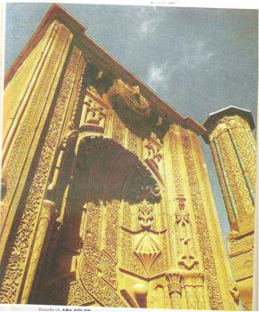

3. Müzik
a. Müzik Fenomeni
Tavsifi mûsikîye bırakmak diler Kemâl
Bulmaz lisanda nağme senâ-hân olan sana
Yahya Kemal
Schopenhauer’in felsefesinde müzik apayrı bir yer işgal eder. Ona göre müzik, en derin, en etkileyici ve en gerçek dildir. Hatta şunu cesaretle söyleyebiliriz ki filozofun, müzik estetiği ve felsefesi hakkında kaleme aldığı düşünceler onun felsefesinin özü ve özetidir. Schopenhauer varoluşun yükünü taşıyan irâde ile mûsikî arasında bir benzerlik, hattâ daha derinlere inildikte bir aynilik olduğunu savunur. Ona göre mûsikî varlığın görüntüsü, taklidi, terkibi ve dolaylı yollardan tasviri değil, bizzat doğrudan doğruya kendisidir; mûsikî varlığın özüdür. O yüzden filozof, mûsikî hakkındaki değerlendirme yazısında: "Dünyayı tecessüm etmiş irâde olarak adlandırabileceğimiz gibi, vücut bulmuş mûsikî olarak da adlandırabiliriz" demektedir. Hiç şüphesiz bu söz, mûsikîyi "donmuş bir mimarî" olarak gören Goethe, Schelling ve Schlegel gibi düşünürlerin ruhunda söylenmiş bir sözdür. Mûsikî ile mimarî arasında nasıl bir ilişki bulunduğunu, bundan murat edilen mânânın ne olduğunu ve Schopenhauer’in bu tartışmaya nasıl iştirak ettiğini detaylarıyla anlamağa çalışacağız; ancak, "dünyayı vücut bulmuş mûsikî" olarak gören Schopenhauer’in bununla mûsikîye nasıl bir önem atfettiğini anlamak için mûsikînin mitolojide işgal ettiği yere bir göz atmamız gerekecektir.
İnsanlığın varoluşundan itibaren dâima mûsikînin metafizik gücü olduğuna inanılmıştır. Tarihte hiçbir toplum yoktur ki mûsikînin sihirli gücünü hissetmemiş olsun. Bütün mitolojilerde mûsikîye mutlaka bir yer ayrılmış, bir atıf yapılmış ve onun büyüleyici gücü olabildiğince yüceltilmiştir. Denilebilir ki beşeriyetin kolektif ruhu çağlar boyunca mûsikî dinlemiş, mûsikîyle derinleşmiş ve zenginleşmiştir. Kolektif hafıza hayatın derinlerinden akseden sesleri hayâlin imkânlarını da kullanarak zamanın elinden koparıp, yeni boyutlarla, farklı olaylarla ve bazen hiç beklenmedik nüanslarla kendi mitolojilerine intikal ettirmeği bilmişlerdir. Ve zamanla insanlık, bizzat kendi imâl ettiği bu mitolojilere öylesine itibar etmiş ki, burada hayâlle hakikatin sınırları birbirine karışıvermiştir. Hiç şüphesiz mûsikînin ruhlarımız üzerinde eşsiz bir hükümranlığı vardır; mûsikî en katı kalpleri ve en akılsız başlan bile yola getirmeğe muktedirdir. Ne var ki mitolojilerde, anlatılan olayların da efsûnuyla mûsikî bambaşka bir kudret alanına erişir. Mûsikînin nasıl kozmik bir güç olduğunu ve ruhları buğday başaklan dalgalandırdığını19 bugün herkes açık seçik görmek imkânına sahiptir. Eski çağlardan beri mûsikî zaman zaman kozmik gücünü ortaya koymakta ve sözün yol bulamadığı alanlara nüfuz et mektedir; söze yol göstermekte, öncülük etmektedir. Öbür yandan mûsikî mitolojiyi de aydınlatan metafizik bir kaynaktır. Bu itibarla mûsikîyi anlamak için belki de evvelâ mitolojiye müracaat etmek yerinde olacaktır -ki bu konuda Yunan mitolojisi bize yeteri kadar malzeme sunmaktadır-. Schopenhauer’in mûsikî felsefesine geçmeden önce girizgâh mahiyetinde musikî ile mimarî arasındaki ilişkiye bir göz atmakta fayda var.
19- Mûsikînin ruhlar üzerindeki büyüleyici etkisini ortaya koyan filozoflardan birisi de Farabî'dir. Friedrich Rückert, filozofun tel ve ses kudretiyle insanları nasıl etkilediğini bir şiirinde şöyle hikâye eder:
Alfarabi
Alfarabi aus Farab,
an den Grenzen Turkestans,
aus Farab, von welchem es
unterschieden, ob es Stadt
oder Land zu nennen sei -
Eine Tagereise lang,
eine Tagereise breit,
schlielk die Stadt in ihrem Raum
nicht nur grofte Gârten ein
sondern Ackerfeld und Wald-
Alfarabi aus Farab
war ein Türke von Geburt,
doch der grösste Philosoph
in Arabien dazumal.
Nicht nur jede Wissenschaft
wusste er, auch jede Kunst
konnte er, und meisterhaft
auf der Laute spielte er
drei verschiedene Töne so,
daB er mit dem einen Ton
aile Hörer lachen macht,
mit dem anderen Tone dann
aile Hörer vveinen macht,
endlich mit dem dritten Ton
alle Hörer senkt in Schlaf.
Wunderbarer Philosoph,
der den Menschen ganz verstand!
Lachen, vveinen und davon
müde schlafen, ist das nicht
eines Menschen Lebenslauf?
El Farabî
Türkistan'ın sınır boylarından
Farablı El Farabî,
Farab'dan ki burası farklıdır:
Şehir mi yoksa ülke mi demelidir
Bir gün boyu uzunluğunda-
Bir gün boyu genişliğindedir,
Yalnız büyük bahçeler şehri değildir,
Şehir ki tarlalarla, ormanlarla
çevrilidir.
Farabî, Farab kentinden,
Bir Türk'tü doğuştan,
Lâkin en büyük filozof,
Ve de yaşadığı yer Arabistan.
Tüm bilimlere vakıf olduğu gibi,
Her türlü sanata da kadirdi
Tamburda pek mahirdi,
Üç farklı tona hâkimdi,
Öylesine ki bir melodiyle
Kırıp geçirirdi gülmekten
dinleyenleri,
Sonra başka bir nağme çalardı da,
Ağlatırdı ezgiyle tüm dinleyenleri
Ve nihayet üçüncü bir tonla
Dalardı tüm dinleyenler uykuya.
insanı hakkıyla anlayan
Muhteşem bir filozof!
Gülmek, ağlamak ve
Bitkin düşüp sonra
Dalıp gitmek uykuya
Hâsıl-ı kelâm
Hayat budur vesselam.
Evvela Yunan Mitolojisinden iki olayı nakletmek istiyorum: Bu olaylardan birisi Orpheus ile Eurydike, diğeri Zethos und. Amphion'a dairdir. Şimdi Orpheus ile Eurydike efsânesini Alman klasik yazarlarından Gustav Schwab ve Şefik Çan'a istinaden özetliyorum:
Orpheus ve Eurydike
Eşi ve benzeri görülmemiş bir şarkıcı olan Orpheus, Trakya kralı, ırmak Tanrısı Oiagrus'un oğludur Anası ise bir ilham perisi olan Kalliope' dir. Melodinin Tanrısı Apollon ona bir lîr hediye eder. Orpheus annesinin kendisine öğrettiği harikulade şarkıları bu lîrin eşliğinde terennüm ettiğinde havadaki kuşlar, sudaki balıklar, ormandaki vahşi hayvanlar ve hatta ağaçlar ve kayalar bu ezgileri dinlemek üzere ona yönelirlerdi. Orpheus' un hanımı iyi yürekli Najada Eurydike idi ve her ikisi de birbirini ince duygularla seviyorlardı. Ne var ki bunların mutlulukları kısa sürdü; zira, düğünün neşeli şarkıları henüz yeni son bulmuştu ki ölüm ter-ü taze Eurydi-ke'yi alıp götürdü. Güzel Eurydike arkadaşlarıyla sık yeşil otlar arasında bir gezinti yapmakta iken, orada saklanan zehirli bir engerek yılanı onu zarif ayağından sokar. Zehirlenen Eurydike korku ve dehşet içerisindeki perilerin kollarına düşer. Bu acılı ölüme dağlar ve vadiler inlemiş ve mütemadiyen hüngür hüngür ağlamışlardır. Bunların arasında en derin acıyı duyan ise Orpheus idi; o, figanını acılı şarkılarıyla seslendirmiştir. Kuşlar, akıllı geyikler ve karacalar terk edilen eşle birlikte matem tuttular. Ancak onun yalvarıp yakarması ve ağlaması kaybolan sevgiliyi geri getirmeye yetmedi. Bu yüzden o şimdiye kadar hiç işitilmemiş bir karar verdi: Bundan böyle ölüler ülkesine inip, Eurydike'yi geri vermeleri için iki karanlık kralı yumuşatmaya çalışacaktı.
Olayın bundan sonrasını Şefik Can şöyle naklediyor:
Öteki âlemin kapısına geldi, lirini çalmaya başladı, yeraltında güneş görmeden sürüklenen zayıf gölgeler ve hayaller Orpheus'un lirinin sihirli sesini işitince muazzam bir kalabalık halinde ona doğru koşuştular. Geceleyin sesiz duran kuşlar gibi onu dinliyorlardı. Erny'lere saç vazifesi gören yılanlar lirinin sesini duyunca ıslık çalmaktan vaz geçtiler.
Cehennemin kapısını bekleyen üç başlı Kerberos'un üç ağzı da açık kaldı, Iksion'un tekerleği lîrin sesini dinlemek için dönmeyi bıraktı durdu. Nihayet Orpheus, cehennemler kralı Hades'in huzuruna çıktı. Lirini daha hazin, daha acıklı çalmaya başladı, hiç kimseye müsamaha etmeyen, hiçbir ricayı kabul etmeyen merhametsiz Hades'in kalbi yumuşadı. Bu ahenkli sesler onun kalbine de tesir etti. Orpheus'a bir şartla karısını geri verebileceğini söyledi. O şart şu idi: Yeryüzüne çıkıncaya kadar kendisini takip edecek olan sevgilisinin yüzüne bakmayacaktı.
Orpheus sevindi, gün ışığına doğru yürümeye başladı, karısı kendisini takip ediyordu. Ahiretin kapısına yaklaştı mışlar, nerede ise yeryüzüne çıkacaklardı, fakat aşk ateşiyle yanan Orpheus, fazla sabredemedi, dayanamadı, kalbindeki sevda, aklına tesir etti. Hades'in sözünü unutarak Eurrydike'yi görmek üzere geri döndü, baktı. Onun bir anlık bakışı her şeyi alt üst etti. Sevgili karısı bir buhar gibi havaya yükseldi ve kayboldu. Boş yere onun arkasından koşmak, onu yakalamak istedi, fakat ruhları kayıkla cehennem deresi Styks'den geçiren kayıkçı onu bir daha kayığına almadı. Kalbi kırılmış, ümidi kaybolmuş olan muzdarip koca, tam yedi ay yalçın bir kayanın üstünde kaldı ve liriyle ıstırabını inledi, kederini, ıssız dağlara vahşi kayalara anlattı. Kaplanlar o ilahi sesi duyunca kan dökücü huylarından vaz geçiyorlar/ munis bir kedi gibi onun dizinin dibine yatıyorlardı.. Meşeler onu dinlemek için dağlardan kopup geliyorlar, kayalar aşağı yuvarlanıyorlardı. Ne aşk, ne izdivaç, artık her şeye veda etmişti. Onun feryatları ve inlemeleri bir türlü bitmiyordu. Bir rivayete göre şaraptan nefret ettiği ve insanlara müzikle sarhoş olmayı öğrettiği için nefretini kazandığı Bakkha'lar bu sarhoş ve çılgın bakireler, bir rivayete göre de ölen karısının aziz hatırasına bağlanıp kalarak gözü başka kadın ve kız görmediğinden öfkelenen Trakyalı kadınlar, bir gece bu kederli aşığın üzerine çullanarak onu param parça ettiler.
Zethos ve Amphion
Homeros'un da mevzubahis ettiği bu ikinci hikâye yine aynı mitolojiden; iki kardeş kralın meşhur Thebai şehrini nasıl inşa ettiklerini anlatıyor. Efsâneyi, Gustav Schwab'dan aynen tercüme ediyorum:
Amphion ve Zethos, Zeus ile Antiope'nin ikiz çocuklarıdır. Kadmos'un oğlu Thebai kralı Polydoros ölüm döşeğinde iken, halen reşit olmayan oğlu Labdakos'u yanına çağırarak idareyi vekâleten Nykteus'a vermesini tavsiye eder. Nykteus, uzun yıllar Labdakos adına ülkeyi yönetir. Labdakos büyüyüp krallığı devraldığında da şansı yaver gitmez ve sadece bir yıl kral olduktan sonra ölür. Bunun üzerine Nykteus bu sefer de Labda-kos'un küçük oğlu Laios'un velayetini üstlenir. Bu arada Nykteus'un Antiope adında pek güzel bir kızı vardır ki Zeus bu kıza âşıktır. Ne var ki Sikyon kralı Epopeus da aynı kıza âşıktır ve bir gün gizlice Thebai kentine gelerek güzel bakireyi kaçırır. Bunun üzerine Nykteus çok öfkelenir ve bir orduyla Epopeus'un üzerine saldırır. Bu dehşetli meydan muharebesinde her iki taraf da büyük kayıplar verir ve her iki kral da yaralanır. Şu var ki bu savaşı yine de Epopeus kazanır. Thebailılar yaralı krallarıyla yurtlarına geri dönmek mecburiyetinde kalırlar. Ölmek üzere olan Nykteus, Laios büyüyünceye kadar krallığı kardeşi Lykos'a devreder. Lykos kral olur olmaz Epopeus'tan öcünü almak ve Antiope'yi Thebai kentine geri getirmeğe ahdeder. Lykos savaşa hazırlanırken Sikyon kralı yaralı Epopeus oluverir. Yerine geçen kral Laomedon ise hiç savaşmadan Antiope'yi geri verir. Lykos, hamile olan Antiope'yi geri getirirken Eleutera bölgesinde ikizler dünyaya gelir. Lykos onları Kithairon dağına bırakır. Bir çoban bu ikizleri dağda bulur ve kendi çocukları gibi sahip olur. Hiç kimse bu çocukların kral çocukları olduğunu bilmez, ikizler birbirlerine içten bağlı oldukları halde tamamen farklı mizaçlara sahiptirler. Zethos becerikli bir çoban olarak büyür, yapılı, sert yaradılışlı ve güçlüdür. Amphion ise mûsikîye karşı istidatlıdır; Hermes bu kabiliyeti keşfettiği için ona bir lîr (lyra) hediye etmiştir. Amphion zamanla öylesine lîr çalmayı öğrenmiş ki tanrı Apollon bile onu dinlemekten kendini alamaz olmuş. [Apollon için ilk defa bir mabet yaptırdığı için bu tanrıdan mükâfat olarak altın bir lîr almıştı. S.Ö.]
Kardeşler tanınmadan tenhalarda yaşarken anne Anti-ope ağır ıstıraplara tahammül etmek zorunda kalmıştı. Gerçi Kral Lykos iyi yürekli yumuşak huylu bir adamdı, fakat Dirke adında cadı bir eşi vardı. Bu kadın kıskançlıktan çatlıyordu ve eşinin kardeşinin kızını sevdiğini zannediyordu. Öfkeden gözü dönmüş bir halde bu mutsuz kadından intikam almaya çalışıyordu. Sık sık onun kızıl saçlarını kızgın demirle yakıyor, yumruklarla zarif yüzüne vuruyor ve acımasızca işkence ediyordu. Zavallı Antiope, bir köle gibi örgü örmek ve çalışmak mecburiyetindeydi; buna karşılık kendisine hiç denecek kadar az ekmek ve su veriliyordu. Günlerce karanlık, murdar zindanlarda açlıktan sararıp soluyordu, yattığı yer sert taştan ibaretti. Ve nihayet bir gün çilesi doldu; Zeus ellerindeki zincirlerini çözdürdü ve hapishanenin kapısını parçaladı. Böylece bahtsız kadın, yol iz bilmeden, soğuk kasırgaların kamçısıyla gecenin karanlığında Kithairon tepelerinde dolandı durdu. Sonunda bir ormanın ortasında ıssız bir çoban çiftliğine rastladı. Burada yalvarıp yakararak bir sığınak buldu. Bu barınaktan iki genç dışarı çıktı; bunlar kendi oğullarıydı ve annelerini tanımıyorlardı. Amphion bu zavallıyı kabul etmek istiyordu; zira gayri şuurî gönlü ona akıyordu. Dik başlı Zethos ise başta onun içeri alınmasına karşı çıksa da sonunda mizacı buna müsaade etmedi ve zavallıyı barınağa kabul etti. Olacak bu ya bu arada Dirke de buraya geliverdi. O, esirin kaçtığının farkına varmış ve izini takip etmişti. Hile ve iftira dolu suçlamalarıyla An-tiope'nin adi bir suçlu olduğu hususunda iki genci ikna etmesini bildi. Kardeşler Kraliçenin tehdit ve ricalarına karşı koyamayıp, bizzat kendi annelerini getirdikleri bir boğanın boynuzlarına bağlamak suretiyle ölüme sürüklemek istiyorlardı. Böylece Dirke'nin emrini yerine getirmiş olacaklardı. Bu esnada birdenbire bu ikizleri ölümden kurtaran çoban çıkıp geldi ve sırrı açıklayıver-di. Antiope, Amphion ve Zethos'un annesiydi! Bu sefer kardeşlerin haklı öfkeleri alçak Dirke'ye yöneldi. Kendisi vahşi boğanın boynuzlarına bağlanarak, boğa dağlara salıverildi. Feci acılar içerisinde Dirke, ruhunu teslim edene kadar dağlarda sürüklendi. Tanrı Dionysos onun cesedini Thebai kenti yakınlarında bir ırmağa dönüştürdü. Bu ırmak halen kötü ruhlu Dirke'nin adını taşımaktadır.
Şimdi artık Amphion ve Zethos, yeniden kavuştukları anneleriyle birlikte Thebai kentine döndüler. Burada zayıf kral Lykos'u kovup uzaklaştırdılar ve krallığı ele geçirdiler. Ancak şehir, Eski Kadmos kentinin etrafını çeviren surların altında olduğu için kardeşler, şehrin surlarını yeniden inşa etmeğe karar verdiler. Fakat Zethos civar dağlardan iri kayaları getiripyüksek duvarlara koyarken, aynı işi Amphion hiç yorulmadan lîrini çalarak yapıyordu. Lîrini çaldıkça, taşlar kendiliğinden harekete gelerek, geniş duvarların üzerine dizilirdi. Kuvvetli kalelerin himaye ettiği yedi kapı, Amphion'un lirinin yedi teli şerefine açılmıştı.
Dikkat edilecek olursa yukarda anlatılan her iki efsânede de madde ile ses arasında bir ilişki mevzubahis edilmektedir. Sesin ve mûsikînin büyüleyici gücü kullanılmak suretiyle estetik bir etkileşim alanı yaratılmaktadır. Mûsikînin yarattığı bu estetik etkileşim alanından sadece insan ve diğer canlı varlıklar etkilenmekle kalmazlar; bilakis ilâhlar, ruhsuz varlıklar ve taşlar da bu alanın cazibesinden kurtulamazlar. Efsânede anlatıldığı üzere mûsikînin yarattığı harmoni, ilâhların katı kalplerini yumuşattığı gibi, harmoninin tonları da taşları parçalama, şekillendirme ve yerleştirme (inşa) gücüne sahiptir. Orpheus, gitarını çalıp içli şarkılarını terennüm ettiğinde rahatlıkla "dağları, taşları ve ağaçları hareket ettirebiliyordu."20
20- Orpheus efsânesine benzer bir hikâye de Çin Mitolojisinde vardır. Anlatıldığına göre Çin Kralı Schuan, kaos tehdidi altında bulunan krallığı müzikle stabilize etmek üzere müzisyen Kuei'yi saray orkestrasının şefliğine tayin eder. Kuei müziğiyle tüm varlıklarda uyum, itidal ve harmoniyi yeniden tesis etmeyi başarır:
Kuei, enstrümanıyla 100 hayvanı dans etmek üzere hareket ettirme gücüne sahipti. Büyüklüğünü ve aydınlığını ortaya koyunca, gittikçe katılaşmış bir dünyada bizzat ölü taşlara dahi ritmik bir hareket kazandırıyordu.
Fiziki güçle mûsikî güçü arasındaki bu irtibat hiç tesadüfi değildir; tam aksine bu ilişki belki de yaratılışın bağrında sakladığı en büyük muammadır. Yaratılış makamında bir tonun varoluşu ile dünyanın varoluşu arasında derin bir irtibat vardır. Yaratılış efsânelerinde bu ilişki çeşitli varyasyonlarla her zaman hikâye edilmiştir. Mûsikînin yaradılış üzerinde metafizik-kozmik bir etkisi vardır. Kadim Mısır dininde Güneş Tanrısı terennüm ederekten âlemi ışığın çığlıklarından yaratmıştır. Kadim Hint mitolojisine göre, aslında sadece bir ilâh olarak varolan Tanrı Prajaba-ti, üç mistik heceyi yani gök, deniz ve yeryüzünü dondurmak suretiyle yaratmıştır dünyayı. Aynı şekilde Brehmen yaratılış efsânesinin başlangıcında da müzik yahut harmoni vardır ve mûsikî yaratılışa refakat etmektedir. İptida var olan "kadim ton" yavaş yavaş sönerek, kaybolarak maddeye dönüşmektedir. Dünya bu dönüşümden ibarettir. Muhammed İkbal, İran'da Metafiziğin Gelişmesi başlıklı doktora tezinde Tanrı'nın Idee'leriyle insanların düşünceleri arasındaki farkı, Tanrı'nın fikirlerinin maddeleşme, maddeye kalbolma özelliği taşımalarına bağlar. Bu yaratılış efsânelerinde ortak olan şey şudur: İster ses, ister harmoni ve isterse anlaşılması zor bir çığlık olsun, her halükârda dünyanın yaratılışı müzikal bir fenomene istinat etmektedir.
Kadim Çin mitolojisinde durum biraz farklıdır. Burada mekân ve ses müşterek bir ilk fenomenin manifestosu olarak anlaşılmaktadır. Buna göre madde, gizli olan akustik bir kalitenin açığa çıkmasından başka bir şey değildir.
Şeyh Galip'in çağdaşı olan Mirza Galip, daha ileri giderek kendi varlığını böyle bir akustik ses olarak tarif eder:
Ben kendi inkırazımın sesiyim...
Batıda çok iyi tanınan Sûfi yazarlardan İnayet Kaan (1882-1927), tüm varlığın ton ve ritim marifetiyle yaratıldığını vurguladıktan sonra her atomun aslında bir tondan ibaret olduğunu itiraf ettiğini söyler. Kendisini dinleyelim:
Yaratılış şuurun faaliyetiyle başlar; bunlar 'titreşimler' olarak isimlendirilebilir. Asıl menşelerinden uzaklaşan titreşimler, sadece ton ve ritim dolaysıyla farklıdırlar... Belirli bir yığılma neticesinde titreşimler duyulabilirlik kazanırlar; ancak üste çıkmak üzere sarf edilen her gayrette, her adımda bu titreşimler çoğalır ve maddîleşir. Esasında bizzat şuurun faal bir bölümü olmasına rağmen ton, bilince kendi mevcudiyetinin, devamlılığının delilini sunar; yani söz konusu faal bölüm ton (ses) oluverir... Bütün her şey titreşimlerden neşet eder; titreşimlerden şekillenir. O yüzden çakmak taşında kıvılcımın saklı olması gibi bu titreşimlerde de tonlar gizlidir. Kâinattaki her atom çıkardığı her sesle şunu ikrar eder: Benim yegâne aslım sadece bir sestir, yalnız bir tondur.
Nihayet eski Çin'in müzik teorisyenlerinden âlim Lü Bu We (ö. 237 İ.Ö.), harmoni, ses ve maddeyi aynı düşüncede toplar ve şöyle der:
Bütün her şeyin menşei, meydana geldiği şey büyük Bir'dir; bunlar karanlık ve ışığın ikiliğinde bir araya gelir ve tamamlanırlar. Tohumun hareketlenmesiyle birlikte bir forma doğru akarak ilerlerler. Bedenî şekil ancak mekân dünyası dâhilinde gerçekleşir. Mekâna taalluk eden her şey bir sese maliktir. Ton harmoniden doğar. Harmoni uyumdan meydana gelir. Harmoni ve bağdaşmanın köklerinden müzik doğar... Müzik gökle yeryüzü arasındaki harmoniye, karanlık ve aydınlık arasındaki uyuşuma istinat eder...
Demek oluyor ki menşei itibariyle yaratılış ve mûsikî arasında kesin bir ilişki vardır. Yaratılış evvelemirde varolan Idee'nin zaman ve mekâna kurulmasıdır. Mûsikî ise, yaratılışla zaman ve mekâna kavuşan Idee'nin tekrar kendi aslına rücu etme hasretinin çıkardığı yankıdır. Burada aslolan ve ebedî olan Idee'dir; ve esasen yaratılış, dünya, harmoni, ton ve mûsikî, anne rahminde bir bebeğin varolması gibi, bir embriyo, bir çekirdek, bir Idee olarak ebediyetin sinesinde zaten mevcuttur. Ezelde böyle bir harmoninin varolduğuna inanan Goethe, 21 Haziran 1827 tarihinde bestekâr dostu Zelter'e bir mektup yazar, ama bilinmedik bir sebepten dolayı göndermez. İşte bu mektubunda Goethe, Johann Sebastian Bach'ın müziği hakkında şöyle bir değerlendirme yapıyor:
Kendi kendime şöyle dedim: Sanki ebedî harmoni, tıpkı, dünya yaratılmadan kısa biran evvel, Tanrı'nın sîne-sinde tecelli ettiği gibi, bizzat kendi kendisiyle muhabbet ediyordu. Benim içimde de hareket eden aynı harmoni idi ve bana, ne kulağım ne gözüm ve ne de diğer hislerimin hiç birisi yokmuş ve esasen lâzım olmayacakmış gibi geliyordu.
Mizaç itibariyle Bach'ın müziğine aslında pek mültefit davranmaması gereken Friedrich Nietzsche, Goethe'nin yukarda söylediğini teyit edercesine Bach'ın Matthâuspassinon'u hakkında şöyle diyor:
Bu hafta üç kez Matthâuspassinon'u dinledim; tabii her defasında aynı insanüstü hayranlık hissiyle. Hıristiyanlığı tamamıyla unutan birisi hakikaten burada bu müziği bir İncil olarak dinleyebilir.
Mevlânâ mûsikî ile varoluş arasında ontolojik bir korelasyon olduğunu gören ilk düşünürlerdendir. Mevlânâ daha Mesnevî'nin başında söze başlarken Bişnev ("Dinle"...)21 lafzıyla bu irtibatı kurmuş; varlıkla, varoluşla mûsikî arasındaki ilişkiyi ontolojik bir temele oturtmuştur.
21 -Mevlânâ, Mesnevî'nin başlangıcındaki 18 beyitte yaratılış ıstırabını terennüm etmektedir:
Bişnev in ney çün hikâyet mîküned
Ez cüdâyîhâ şikâyet mîküned
Dinle neyden nasıl hikâyet eder,
Ayrılıklardan şikâyet eder:
Kez neyistân tâ merâ bübrîdeend
Ez nefîrem merd ü zen nâlîdeend
Koptuğumdan beri kamışlıktan ben,
Ağlar kadın, erkek inleyişimden.
Ona göre mûsikî bizzat varlığın kendi sesidir; varlığın doğrudan doğruya kendisidir; varlığın otantik çığlığıdır. Mûsikî varoluş acısını verir; bizzat kendisi bir varoluş feryadıdır. Bezm-i ezelde ney kamışlıkta idi; kamışlık onun anavatanıydı ve ney anavatanında hiçbir varoluş acısı hissetmiyor, dolayısıyla feryat etmiyordu. Feryat etmiyordu, etmediği için de mûsikî yoktu. Mûsikî yok olduğu için varlık dâ yoktu. Bu itibarla mûsikî aynı zamanda varoluş sırrının ifşasıdır. Felsefi terminoloji ile ifâde etmek gerekirse, mûsikîden önce ontolojik anlamda bir varoluş mevzubahis değildi. Bu evvelemirde varlık yoktu mânâsına gelmez; zira varlık, tıpkı Platon'un Idee'leri misali, bir Idee (fikir) olarak her zaman vardı. Evet, Varlık bir Idee olarak evvelemirde vardı ve dünya Goethe'nin Wiederfinden22 (vuslat) başlıklı şiirinde ifâde ettiği üzere, Tanrı'nın ebedî sinesinde uykudaydı. Ney kamışlıktan kurtulunca varlık, dünya ve mûsikî gün ışığına çıkıvermiştir. Mevlâ-nâ'nın en üstün yorumcularından biri olan Muhammed İkbal, neyin kamışlıktan kesilmesini yani yaratılışı mûsikînin zindandan kurtulması olarak yorumlar:
Uyanık gözümüzün aslı nedir?
Görme zevkinin şekil almasıdır.
Kamışlıktan uzaklaşınca, ney mesut oldu;
Musikî, zindandan kurtuldu! (AK)
22- Goethe'nin bu şiirinin söz konusu mısrası şöyledir:
Als die Welt im tiefsten Grunde
Lag an Gottes ewger Brust,
Ordnet' er die erste Stunde
Mit erhabner Schöpfungslust.
Und er sprach das Wort: »Es werde!«
Da erklang ein schmerzlich Ach!
Als das Ali mit Machtgebârde
İn die Wirklichkeiten brach!
Dünya en ıssız ve en derin yerinde
Uyurken Tanrının ebedî sinesinde
Emretti, hazırladı o ilk ânı
Yüce bir yaratma arzusu ile,
"Ol!" emrini verdi,
Acı bir ah yankılandı o anda!
Alem kudret ve ihtişamla
Varoldu gerçekleşerek bir anda.
b. Mimarî ve Mûsikî
Bir kerre mehtapta o saf inciye, o Taç Mahal'e bak; mermeri akan sudan canlıdır, daha mütenevvi çeşitler gösterir.
Muhammed ikbal
KITAB-I MUKADDES de "İptida söz vardı" derken sözün gücü yani müzikal bir sesin mistik etkisi vurgulanmaktadır. Esasen yaratılış bu ilâhî sözün maddeleşmesinden başka bir şey değildir. Keza Kur'an-ı Kerim'in Yasin süresindeki "Kün fe yekun" (Ol dedi oldu!) ayeti de bu hakikati teyit etmektedir.
Yukarıda Yunan mitolojisinden aldığımız iki efsâne göstermektedir ki antik çağda insanlar, müzikal sesin mistik ve yaratıcı gücüne inanmaktaydılar. Antik çağın mimarları, mimarî eserlerini müzikal oranları esas alarak inşa ediyorlardı. Doğrusu insanoğlu müzik yapmaya ve yapı inşa etmeğe başladığından beri mûsikî için optimal mekânlar aramıştır. Antik Yunanlılar, amfi tiyatrolarını inşa ederken sesin ve mûsikînin en iyi duyulmasına dikkat etmişlerdir. Vitruvius, Mimarlık Üzerine On Kitap adlı eserinde, "Tiyatro: Arazisi, Temelleri ve Akustiği" başlığı altında akustik açıdan tiyatronun yerinin ve mimarisinin ne kadar önemli olduğuna işaret ettikten sonra şöyle diyor:
• Ses, dokunma ile algılanan, akan bir nefes havadır. Durgun suya bir taş atıldığı zaman oluşan ve dar sınırlarla durdurulmadıkça veya bitimlerine kadar yayılmalarını önleyen bir engel bulunmadıkça merkezden sonsuza değin yayılmayı sürdüren dalgalar gibi bitmeyen sayıda daireler halinde hareket eder. İlk dalgalar, engellerle karşılaştıkları zaman geriye akarak onları izleyen dalgaları kırarlar.
• Aynı şekilde ses, içice daireler halinde hareket eder; ancak, su örneğindeki gibi dalgalar düz bir düzeyde yatay olarak seyrederken, ses yalnızca yatay değil, dikey olarak da düzenli aralıklarla yükselir. Bu nedenle, suda oluşan dalgalar örneği ses için de geçerlidir. İlk dalga onu kesecek bir engel olmadığı zaman, ikinci veya onun ardındaki dalgaları kırmadığı için, tümü de yankılanmadan en alttaki ve en üstteki seyircilerin kulağına ulaşır.
• Sonuç olarak, doğayı izleyen eski dönemlerin mimarları, yükselen ses üzerine araştırmalarından, tiyatrolarda-ki yükselen oturma yerlerini mükemmelliğe ulaştırdılar; matematikçilerin ve müzisyenlerin geliştirdiği kanon kuramı aracılığı ile sahnede çıkarılan her sesin daha berrak ve tatlı bir şekilde dinleyicilerin kulağına ulaşması için uğraştılar. Çünkü tıpkı müzik aletlerinde, tunç levhalar veya boru kullanıldığında tellerin tınısının mükemmel bir berraklığa erişmesi gibi, eskiler de tiyatrolarda armonik uygulamalarla sesin gücünü arttırmak için yöntemler geliştirdiler.
Mûsiki için mekânın ne kadar önemli ve vaz geçilmez olduğunu bir konser salonunda herhangi bir senfoni dinleyen herkes bilir; zira aynı senfoniyi en modern elektronik aletlerden evinizde dinlediğinizde aradaki fark kendiliğinden ortaya çıkar.
Esasen en eski çağlardan beri mimari ve mûsikî arasında mahiyet itibariyle bir yakınlığın, bir korelâsyonun olduğu dikkatlerden kaçmamıştır. Doğrusu bu ikisi arasındaki karşılıklı alâka zannedildiği kadar komplike değildir. Mimarî, bir mekân realitesinden; mûsikî ise daha çok bir zaman tasavvurundan ve tasarrufundan doğmakla birlikte tıpkı zaman ve mekân gibi iç içe geçmişlerdir. Öyle ki daha çok zamana istinat eden mûsikî sanatı, âdeta bir mekân sanatına inkılap etmekte ve aynı şekilde bir mekân sanatı olan mimarî de büyüleyici bir mûsikîye dönüşmektedir. Mimarîde mekâna ritmik bir dinamizm kazandırılır; mûsikîde ise zamanın akışına ince bir ahenk, bir form verilir. Mimarîde mekân çözülüp zaman olarak akarken, mûsikîde zaman âdeta dondurularak mekânlaştırılmış olur. Yaratılışın kanunu icabı insan bu harmoniyi, kulağıyla olduğu gibi gözüyle de duyabiliyor.
Mûsikî ile mimarî arasındaki ilişkileri anlamaya çalışırken özellikle bir hususu gözden kaçırmamak lâzım gelir. O da şu: Yaratılışın kanunu ile mûsikînin ve mimarînin kanunları aynıdır. Mimarîdeki simetri (matematik oranlar) teorisi, musikîdeki harmoni teorisine istinat etmektedir. Bu düşüncenin kökleri Pisagor (M.Ö. 570'e doğru - M.Ö. 480'e doğru)'a kadar gitmektedir. Bilindiği üzere bu filozof, "Evrenin hâkimi sayıdır; sayılar evreni yönetir" diyordu.23
23 -Seville'li Isodere, "Tolle numeroum omnibus rebus et omnia pere-unt" ["Bütün nesnelerin sayılarını alın hepsi çürüyecektir" ] derken Pisagor'dan farklı bir şey söylemez.
Ona göre harmoni, sayılarla oranlar arasındaki uygunluktan kaynaklanır. Aristoteles (M.Ö. 384-322)'in anlattığına göre Pisagorcular, "Matematiğin prensipleriyle varlığın prensiplerinin aynı olduğuna; zira bütün tabiatın sayılara göre yapılandırıldığına; tüm gökyüzünün sayılardan ve harmoniden ibaret olduğuna" inanıyorlardı. Ölçülebilir bir şekil ve form olan sayılarda kozmos bir nizam olarak kendini ortaya koyar. Pisagorcular'ın itikadınca sayılar dünyanın kanununu temsil ettikleri gibi güzelliği de temsil ederler. Pisagor, sayıları keşfettikten sonra bu sayıların ses tonlarına uygunluğunu da ortaya koydu. Filozof mûsikîyle de iştigal ettiği için matematik oranları aynen mûsikîde de uyguladı ve gördü ki tel kısalınca çıkardığı ses de inceliyor. Böylece iki telden birinin uzunluğu diğerinin iki katı ise, kısa telin çıkardığı ses, uzun telin çıkardığı sesin bir oktav üstündeydi. Eğer tellerin uzunluklarının oranı 3'ün 2'ye oranı gibiyse, iki telin çıkardığı sesler beşli aralıklı idi. Bu itibarla herhangi bir sazda tellerden birinin ortasına parmağımızı basıp, teli titreştirecek olursak çıkacak olan ses, tel boş titreşirken çıkacak sesin bir oktav üstünde olacaktır.
Demek ki mimarîdeki etkileyici simetri ile mûsikîdeki harmoni arasında cidden derin bir benzerlik vardır. O itibarla mûsikîdeki harmoniyi bir mekân tasarrufu olan mimarîdeki simetri, ahenk ve akış olarak tasavvur etmek kabildir. Ama aynı şekilde mimarîde simetrinin yarattığı ahengi sükût etmiş bir mûsikî olarak da dinlemek fevkalâde mümkündür. Bugün Selçuklu Devri Taş ve Ahşap Eserler Müzesi olarak kullanılan ve Selçuklu Sultanı İzzettin Keykavus II. devrinde Vezir Sahip Ata Fahrettin Ali tarafından 1258-1279 tarihinde inşa ettirilen İnce Minare Medresesi'nin taç kapısını göz önüne getirelim. Selçuklu taş işçiliği şaheserlerinden olan bu taç kapı, üzerindeki kabartmalı geometrik ve bitkisel bezemelerle birlikte Selçuklu sülüsüyle yazılmış "Yasin ve Fetih" süreleriyle mimarî ahenk, bütünlük, zarafet, simetrik akış ve ritim itibariyle hakikaten donmuş bir mûsikîdir. Bu eserdeki ilahî bütünlüğü, simetrik ritmi ve gür akışı gören insan, mimarî ve mûsikînin aslında aynı varoluş kaynağından neşet ettiklerini anlamakta zorluk çekmeyecektir. Şüphesiz filozofların, mimarların ve müzisyenlerin yüzyıllardan beri mimarî ve mûsikî arasındaki benzerliğe işaret etmeleri boş bir fantezi değildir.
Mimarîde akustik dengeyi en iyi uygulayan mimar olarak bilinen Mimar Sinan, Süleymaniye Camiinde yarattığı kubbe akustiğiyle dehasını ortaya koymuştur. Anlatıldığına göre Sinan, Süleymaniye Camiinin yapımında kubbedeki akustik duyumu denetlemek için merkezde nargile fokurdatmış ve kubbenin her bir köşesinden işçilerinin ellerindeki borularından nargilenin sesini duyup duymama- ' sına göre, düzenlemeler yapmıştır. Kısaca Sinan, ağız içindeki akustik oluşumu sağlayan yapı ile mimarideki akustik dengeyi sağlayan kubbe arasındaki benzerliği bildiği için Süleymaniye Camiini tamamen insanın ağız ve damak yapısına uygun olarak inşa etmiştir.
Sultanahmet Camiinin mimarı Mimar Mehmet Ağa' nın da mûsikî ve mimarî konusunda Sinan'dan farklı düşünmediği ve hatta "mimari donmuş mûsikîdir'''diyen Alman romantik şair ve filozoflarından iki yüzyıl önce tartıştığı belgeyle sabittir.24
24 -Kemâl Çığ, Mimarinin Müzikle İlgisi Konusunda Sultanahmet Camii ile Alâkalı bir Vesika (1), Kemal Çığ'a Armağan içinde, İstanbul 1984, s. 89-97
Bu fevkalâde önemli belgeden Mimar Mehmet Ağa'nın mîmar olmadan evvel iyi bir mûsikî tahsili gördüğü anlaşılmaktadır. Kemâl Çığ, makalesinde belgenin ilgili bölümünü vurgulayarak şöyle demektedir:
Risale-i Mimariye de Cafer Çelebi, Mimar Mehmet Ağanın hayatını, yetişme tarzını yaptığı eserleri, ilmi hendeseye ait bazı bilgileri, mimarlığa ait ve yapı sanatında kullanılan âdetleri fasıl fasıl şiir ve nesir olarak anlatmış ve bir de sözlük ilâve etmiştir. Risale, 1023 hicri, 1623 Milâdi senesinde, yukarıda da belirtiğimiz gibi, kaleme alınmıştır ki, bu tarih Sultan Ahmet Camiinin kubbelerinin tam kapanmak üzere olduğu zamana tesadüf eder. Camiin inşaat durumu bu aşamada iken, daima temasda bulunduğu Mimar Mehmet Ağayı inşaat yerinde ziyarete giden Cafer Çelebi onu, camiin döşenmiş bir seccade yanında bir elinde teşbih bir elinde arşın olduğu halde sürekli teşbih çekip ve çektiği her danede Kelime-i Şahadet getirdiği ve etrafındaki çalışan ustalara nezaret ettiği sırada bulur. Bir kenara oturup, dua ettiğini zannettiği Mehmet Ağa'nın duasını bitirinceye kadar beklemeye ve ondan sonra yanına gidip konuşmaya karar verir. O arada devrin musiki üstadlarından birisi de (isim yoktur) camii seyretmek için çıkagelir ve etrafa nezaret ettikten sonra Cafer Çelebi'nin yanma gelip oturur ve başlarlar ikisi şu yolda konuşmaya: Cafer Çelebi, yeni gelen musiki üstadının hayretler içinde Mehmet Ağayı seyrettiğini görünce, Mehmet Ağanın evvelâ ilmi musiki tahsil ettiğini, ondan sonra sedefkârlık ve mimarlık öğrendiğini söyleyerek, onun yetişme tarzını tanıtmaya çalışır. Bu açıklamayı dinleyen musiki üstadı - hâlâ Mehmet Ağanın burada musiki yapmakta olduğunu, hâttâ yontulan mermerlerin bile vecde gelmiş sofilerin semaa başladığı zaman çıkardıkları sada-lar gibi sadâ verdiklerini anlatarak Padişah Hazretlerinin bu bir büyük şansıdır ki, böyle bir mimar ağaya sahiptirler, der ve devamla, siz mimar ağanın ilmi musikiye ilgi göstermiş olduğunu söylediniz, hâlâ bu camii şerif binasında biz, ilmi musikiyi bittamam müşahade eyledik, şimdi binayı seyrederken on iki cins mermer müşahade eyledik. Her bir mermerden bir çeşit sadâ ve bir gûnâ makam hasıl olur, on iki cins mermerin sadâlarında ayni ile on iki makam müşahade eyledik. Mermerler yontulurken, mermerin cinsi ve yontuluş tarzı o mermerin değişik bir makamda ses vermesini temin etmekte, yine müşahade edi-yorümki, yedi mutemed usta her biri bir çeşit sadâ çıkararak durmadan binayı dolaşmakta, on iki cins mermer evvelâ tasmim olunmakta ve sonra yine istenilen makamda ses verebilmesi için gerekli yontulma yapılmaktadır. Her birinde bir türlü savt ve sadâ vardır ki, yirmi dört terkibi dahi anda müşahade eyledim. İşbu zikrettiğim usûl cümlesi ilmi musiki şekli değil midir, deyu - azizi mez-bur hadiseyi böylece bildirip Cafer Çelebi'ye selâm verip çıkıp gider.25
25 - Kemâl Çığ, Mimarinin Müzikle İlgisi Konusunda Sultanahmet Camii ile Alâkalı bir Vesika (1), Kemal Çığ'a Armağan içinde, İstanbul 1984, s.91
İnsan bedeninin formundan elde ettiği ideal orantıyı mimarîye uygulayan ve bu meyanda "Mimarlık Üzerine On Kitap" adlı eserinde mimarlığın kanunlarını toplayan Romalı mimar Marcus Vitruvius Pollio (M.Ö. 90-20), bu kitabında bir mimarın teoloji, tarih, felsefe, tıp, hukuk, geometri, astronomi gibi ilimlerin yanı sıra mûsikî de bilmesini istemiştir. Mükemmel bir mimar, iyi lisan bilmese de gramere hâkim olması ve bu arada heykeltıraşlık bilmesi gerekmektedir. Şunu da ilave edelim ki bir dilin grameri doğrudan doğruya mimarîdeki strüktüre tekabül eder. Mûsikiden anlamayan bir mimarın, büsbütün musikî için yapılan bir opera binasını nasıl inşa edeceği düşünülecek olursa Vitruvius'un ne kadar haklı olduğu kolayca anlaşılmış olur. Bach'ın orgla icra ettiği eserlerin çoksesli yapısı nazarı dikkate alındığında, bunların taş yapı gotik katedrallerde icrasının neredeyse imkânsız olduğu ortaya çıkmaktadır. Zira bu katedraller sesi akustik olarak dağıtmaktadırlar. Bu eserlerin Leipzig'deki Thomas Kilisesi'nde nasıl icra edildiklerine gelince görülür ki, bu kilisede, o zamanlar Barok kiliselerinde tipik olan ahşap aksam kullanılmıştır. Mûsikîyle mimarî arasında öylesine bir ilişki vardır ki mekâna göre müzik veya müziğe göre mekân seçmek artık kaçınılamaz olmuştur.

İNCE MİNARE MEDRESESİNİN TAC KAPISI
Fotoğraf: ARA GÜLER
Sözgelimi camilerde oyun havaları çalınamayacağı gibi, spor salonlarında da Mevlevi âyinleri icra edilemez. Şayet spor salonlarında Mevlevi âyinleri icra edilirse bu, âyin olmaktan çok, ruhunu, esrarını ve manâsını kaybetmiş, aslî misyonundan uzaklaşmış turistik gösterilerden öteye geçemez.
Goethe, İtalya Seyahati III. adlı eserinde Roma'yı anlatırken, "birçok yatay ve binlerce dikey çizginin tezyin edercesine ve fasılasız" büyüleyici oyunundan bahseder ve bu oyunun hem ruhunu ve hem de gözlerini "bir sükût mûsikîsi gibi" büyüleyerek, kendisini "bütün mahdut ve küçük şeylerden koparıp aldığını" vurgular. Şairler Prensi, yukarıda anlattığımız Orpheus efsânesini mimarî ve mûsikî arasındaki ilişki nokta-i nazarından şöyle yorumlar:
Asil bir filozof mimarîden donmuş mûsikî olarak bahsetmiş ve burada bazı itirazlar duyulmak durumunda kalınmıştır. Biz mimariyi sükût etmiş musikî olarak adlandırmaktan daha üstün bir düşünce olacağını düşünmüyoruz. Orpheus efsânesini düşünelim; büyük metruk (boş) bir inşaat yeri emrine verildiğinde Orpheus, bilerek uygun bir yere kurulup oturur ve lîrini öylesine içli çalar ki etrafında alabildiğine geniş bir pazaryeri şekillenmeye başlar. Kudretli emirler, sevimli, cezbedici seslerle derhal harekete geçirilen, önce bütün kütleler şeklinde bulunan kayalar oldukları yerden koparılarak, büyülenmiş halde istenilen tarafa hareket ettiriliyor, sanatkârane ve ustalıkla şekil verildikten sonra düzenli tabakalar halinde ve uygun bir sırayla duvarlarda istifleniyorlardı.
Aslında Goethe'nin burada anlattığı olay, yani Orphe-us'un mûsikî marifetiyle cansız maddeleri etkilediği, onları hareket ettirdiği mitolojide yoktur. Anlaşılan Goethe burada sadece bir rivayete ya da yaşadığı bir rüyete (vizyona) itibar etmekte ve mûsikînin mistik etkisini mimarîye transfer etmektedir. Olayın asıl mitolojik kahramanı yukarıda anlatıldığı üzere Thebai kentinin kurucusu Amphion'dur ki bununla ilgili doğru yorum Schelling'e aittir. Schelling şöyle buyurmaktadır:
Şayet mimarî aslında donmuş mûsikîyse, bu düşünce Yunan şiirine hiç yabancı değildir; zira malum mitos gereğince Amphion, lîrinin içli nağmeleriyle taşları hareket ettirip bir araya getirerek Thebai kentinin etrafındaki duvarları inşa etmiştir. Şayet mimarî hakikaten konkre mûsikîyse, ki eskiler böyle görüyorlardı, o zaman bu bilhassa daha çok ritmik, dorik ve eski Yunan mimarisidir.
Böylece, "Mimarî donmuş mûsikîdir" sözünün ardındaki mitosun nasıl bir felsefî muhtevayla yüklü olduğu ve böyle bir metaforun aslında çoktandır Alman romantiklerini büyülediği anlaşılmaktadır. Bu sözün kime ait olduğuna gelince rivayet muhteliftir ve bu konudaki tüm iddialar spekülasyonlardan öteye geçemez. Bu metaforu ilk defa kullananlar arasında adı geçen bir düzine Alman filozof, şair ve yazarı vardır. Kesin olarak sözün asıl sahibinin kim olduğu bilinmemekle beraber aşağıda adları geçen isimler zikredilmektedir. Bunlar Clemens Brentano, Jo-seph Görres, Johann Wolfgang von Goethe, Jean Paul, Fri-edrich Wilhelm Joseph Schelling, August VVilhelm von Schlegel, Friedrich von Schlegel, Arthur Schopenhauer, Anne Louise Germaine Stael-Holstein, Vischer ve Schel-ling'in estetik hakkındaki derslerini dinleyen Henry Crabb Robinson adında Londralı bir avukattır.
İmdi sözün ilk sahibinin kim olduğunu bir tarafa bırakıp, matematik izahları esas aldığımızda görürüz ki mûsikî ve mimarî aslında "evrenin hâkimi sayı"mn çocuklarıdırlar. Çünkü her ikisinin de karakteristiğini tayin eden ritim ve harmoni matematiğin eseridir. "Son menzilde, mûsikîde", diyor Augustinus, "ister ritim isterse biçim verme mevzubahis olsun akıl, sayıların kayıtsız şartsız faaliyetini ve hâkimiyetini idrak etmektedir." Peki, bu nasıl oluyor? Akıl sayıları nasıl buluyor? Kısaca şöyle izah ediyor Augustinus:
Buradan akıl gözün kudret alanına geçer; göz gökyüzünü ve yeryüzünü seyrederken akıl, sadece güzelliğin hoşuna gittiğini hisseder. Sonra da güzellikte formların, formlarda ölçünün ve ölçüde sayıların hoşuna gittiğini anlar...
Demek oluyor ki mimarî ve musikî matematikte, sayıların harmonisinde en ulvî ifâdesini bulmaktadır. Çeşitli mimarîlerde ve mûsikîlerde usul ve üslûp farklı olsa da esas birdir. O da sayıların ritmi, tek kelimeyle Vahdettir. Bir vahdet medeniyeti olan bizim mimarimiz bunun en bariz delilidir. O yüzden Ekrem Hakkı Ayverdi, "Mimarî ve Mûsikî" başlıklı bir makalesinde şöyle demektedir:
Nasıl mîmârî binanın toprağa bir kaya salâbetiyle oturduğu, birbirini tamamlayan beden duvarından, yumuşak bir silme ile kubbelere, oradan da aynı edâ ile ikinci, üçüncü sıra kubbelere ve nihayet orta kubbeye geçtiği ve şâhâne bir sorguç alemde toplanıp, aralarda bir kesilme, bir boşluk bırakmıyorsa mûsikîde de bir nağme, bir nefha bir evvelkinin devamı oluyor ve arada kopukluk kalmıyor.
c. Müziğin Metafiziği
Mûsikî Tanrı'nın sesidir.
Tamburi Cemil
BEETHOVEN, "mûsikî hikmet ve felsefeden daha üstün bir manifestodur" der. Mesele bu manifestoyu anlamaktır. Karakteri düzgün olan her insan mûsikî dinlediğinde ruhunda bir kıpırdamanın olduğunu fark eder. Çünkü mûsikî insanı derinden saran, ruhundan kavrayan evrensel bir dildir. Evrensel bir dildir, amma belki de hiç anlaşılmayan yahut en az anlaşılan veyahut da en zor anlaşılan dil. Mûsikî kulağa hitap ettiği için en kolay anlaşılır, çünkü kulak göze kıyasla harmoniyi derhal ve çok iyi algılayan bir organdır. Ancak mûsikî tamamen soyut olduğu için, duyu organlarımızla algılayabildiğimiz herhangi bir objeye istinat etmediği için anlaşılması zor bir sanattır. Cevheri ve mahiyeti itibariyle mûsikî bir muammadır; felsefenin ve estetiğin çözemediği, ama hiçbir zaman da ondan kopamadığı bir metafizik, bir muamma, tıpkı Kant'ın das Ding an sich (bizatihi kendinde şey) 'i yahut Schopen-hauer'ın "irâde"si gibi bir bilmece. Hazzm, hüznün ve acının kamçısıyla ruhlarımızı bir nağmenin, ebedî bir harmoninin peşinden koşturan bu bilinmeyen despot, mimariyle birlikte Schopenhauer'ı en çok uğraştıran metafizik bir problemdir. Filozof bu iki sanatla ilgili hükmünü şöyle özetler:
Tarafımdan yapılan sanatlar sıralamasında mimarî ve mûsikî en uç noktayı teşkil ederler. Aynı şekilde bu ikisi, içyapıları, güçleri, kapsadıkları alan ve önemleri icabı en mütecanis (heterojen) ve evet, gerçek anlamda birbirine zıt iki düşmandırlar.
Başlangıçta Schopenhauer, bu iki sanat türünün iki metafizik mesele olarak ne kadar müşkil olduklarına işaret etmek için paradoks bir ifâde kullanmaktadır: "Mütecanis" ve "gerçek Antipod" ("tamamen birbirine zıt iki şey, iki düşman"). Aslında Schopenhauer, bu sanatları bir taraftan "mütecanis", diğer taraftan birbirine zıt kesin iki kutup olarak tayin ederek bir diyalektik geliştirmektedir. Bu diyalektik ileride onun işini kolaylaştıracaktır.
Başlangıçta hemen şunu belirtelim ki Schopenhauer, anlaşılması pek zor bir sanat türü olan mûsikînin özünü felsefenin ışığıyla aydınlatan dâhi bir filozoftur. Hiçbir filozof müzik hakkında onun kadar ihata ve ikna edici fikirler serdetmemiştir. Bugün müzik felsefesi hakkında düşünmek isteyen hiç kimse onun müzik ve estetikle ilgili fikirlerine bigâne kalamaz. 17. yüzyılın ikinci yarısından itibaren Almanya'da hem mûsikî hem metafizik alanında Bach, Hândel, Gluck, Haydn, Mozart ve Beethoven gibi fevkalâde önemli müzisyenler ve aynı zamanda Leibniz ve Kant gibi filozoflar yetişmiştir. Mamafih bunların hiçbiri bir müzik metafiziği temellendirmemiştir. Gerçi Hegel ve Schelling gibi idealist filozoflar müzik felsefesi hakkında önemli görüşler beyan etmişlerdir, ancak bunların hiçbirisi beklenilen yankıyı yaratmamıştır. İlk defa Schopenhauer, felsefî bir sezgiyle bir müzik metafiziği temellendirme başarısını göstermiştir. Bu itibarla felsefe tarihinde Schopenhauer, müziğe ontolojik bir alan açan ve felsefî bir boyut kazandıran eşsiz filozoftur. İşte bu yüzden Wag-ner, filozofun müzik metafiziği hakkındaki teorisini yegâne geçerli yorum olarak kabul eder ve şöyle der: "Schopenhauer’in takdim ettiği derin fikirli paradokslar felsefi bilgi için doğru izah edilip çözülmediği takdirde Beethoven'i dahi hakkıyla anlamak mümkün değildir."
Wagner'in burada bahsettiği "paradoks", şuradan kaynaklanmaktadır. Mûsikî hariç, güzel sanatların tümüne hâkim olan espri mimesistir; yani taklit ve tasvir. Diğer sanatların tümü, dünyanın tasvirine yönelik bir manifestodur. Bu sanatlardan hiçbirisi doğrudan doğruya dünyanın özünü vermeye muktedir değildir. Yapabilecekleri azami şey, görünen dünyayı tasvir etmek yahut görüntüler âleminin ardındaki Idee'leri açığa çıkarmak veyahut da dünyanın özünden akseden Idee'leri sanatkârane bir tarzda ortaya koymaktır. Şu var ki bu sanatlardan hiçbirisi bizzat ve doğrudan doğruya dünyanın kendini, özünü, yüreğini ortaya koyamazlar. Onların yaptıkları hiçbir şekilde tasvirden öteye geçemez.
Mûsikîye gelince o, doğrudan doğruya bize dünyanın cevherini verir. Mûsikî ne dünyanın tasviriyle ve ne de Idee'ler'm tasviriyle uğraşır; o, dünyanın bizzat kendisidir. Mûsikî, tamamen Idee'den müteşekkil bir dünya yaratma sanatıdır. Başka bir ifâdeyle mûsikînin yarattığı dünya Idee'nin tasviri değil, bizzat kendisidir. Musikînin yarattığı dünyanın bir kopyası yahut misli yoktur. Musikî, deyim yerindeyse eşi ve benzeri olmayan bir dünya koyar ortaya. Şu var ki mûsikî marifetiyle yaratılan bu dünyanın halikı, lâ teşbih, kâdir-i mutlak bir Tanrı değil, bizzat kulağını söz konusu dünyanın yüreğine dayamış müzisyenin kendisidir yani kompozitör yahut bestekârdır. Wagner'in söz konusu ettiği "paradoks" işte burada yatmaktadır. Bu düşüncenin müellifi aslında Schopenhauer'dır; amma Wagner, bu konudaki yegâne üstadına bağlı kalmak kaydıyla ve de onu kılavuz alarak diyor ki:
Müzik dünyanın özünü açığa çıkarır; o, Idee olarak dünyayı tasvir etmez, bilakis bizatihi kendisi bir dünya Idee'sidir. Topyekûn mûsikîyi kavramlarla açıklayabilen bir kimse, aynı zamanda dünyayı izah eden bir felsefe takdim etmiş olurdu.
Şu var ki mûsikî her hangi bir objeye istinat etmediği için onu kavramlaştırmak göründüğü kadar kolay değildir. Bununla birlikte Beethoven, "mûsikî hikmet ve felsefeden daha üstün bir manifestodur" derken, dünyanın müzikal bir manifesto olduğu ve pekâlâ anlaşılabileceğini vurgulamaktadır. Mûsiki tamamen soyut ve girift bir zaman matematiğidir. Hal böyle olunca mûsikîyi kavramlaştırmak dünyanın en zor işi olmak lâzım gelir. O itibarla mûsikîyi kavramlar marifetiyle açıklamak demek, dünyanın özüne hâkim olan harmoniyi yani sayıların birbirleriyle ilişkisini kavramaktan başka bir şey değildir. Sayıların birbiriyle ilişkisi ile tonların birbiriyle olan ilişkisi esas itibariyle aynı mahreçlidir. Yukarıda belirttiğimiz üzere bu düşünce Pythagoras'a aittir. Bu filozof, dünyayı bir harmoni olarak, sayıların ve tonların harmonisi olarak izah etmişti. Leib-niz de mûsikîyi matematiğin bir bölümü olan aritmetiğe dayandırmakta ve şu tarifi yapmaktadır: exercitium arithme-ticae occultum ne-scientis se numerare animi [Müzik ruhun gizli bir sayma egzersizidir ki ruh burada saydığının farkında değildir.] Schopenhauer'a kalacak olursa, Leibniz'n bu tarifi doğru olmakla birlikte yetersizdir. Yetersizdir çünkü Leibniz, bununla sadece zahirî anlamı, yalnız kabuğu görebilmiştir. Oysa mûsikî Schopenhauer'a göre daha farklı bir fenomendir. Kendisini dinleyelim:
Hâlbuki eğer mûsikî bundan öte bir şey değilse, o zaman onun sağladığı tatmin; bizim bir örnek hesap yaparken doğru çözümden dolayı hissettiğimize benzer olurdu; yoksa varlığımızın özünün ifâde edildiğini gördüğümüzde duyduğumuz o derin neşeye değil. O itibarla estetik etki mevzubahis olduğunda, bizim görüş açımızdan bakıldığı zaman, ona [mûsikîye] çok daha derin ve ciddi, dünyanın yüreğiyle bizim benliğimiz arasındaki ilişkiye benzer bir mânâ vermemiz gerekir... Herhangi bir şekilde estetiğin yarattığı etki, temsilin temsil edilene, suretin aslına nispeti gibi olmak mecburiyetinde olduğu için, diğer sanatları bu analojiden dışlamak zorundayız, zira onların tümüne bu karakter hâkimdir. Müziğin üzerimizde yarattığı etki diğer sanat-larınkiyle aynı nevidendir, ancak daha güçlü, daha hızlı, daha zorunlu ve daha emindir. Müzik estetiğinin, dünyayı tasvir etme relasyonu da pek içten, namütenahi gerçek ve tam isabetli olmak zorundadır, çünkü o herkes tarafından hemen anlaşılmaktadır ve belirli bir yanılmazlık ihsas etmektedir. Şöyle ki, onun (müziğin) biçimi sayılarla ifâde edilen belirli kaidelere müncer olmaktadır; o, sayılarla kaim bu kaidelerin dışına çıktığı zaman mûsikî olmaktan tamamen çıkar.
Burada Schopenhauer’in iddia ettiği gibi mûsikînin hakikaten herkes tarafından anlaşılan, herkes tarafından aynı ölçüde anlaşılan yahut herkeste aynı duygular sağanağına yol açan, herkesi aynı ölçüde coşturan veya hüzün-
lendiren bir sanat türü olduğu epeyce şüphe götürür. Ancak diğer sanatlara kıyasla mûsikînin irâdeyi daha iyi aksettirdiği, âlemin özüyle kendi benliğimiz arasındaki ikiliği ortadan kaldırdığı söylenebilir.
Schopenhauer'a göre müzik irâdenin vasıtasız dilidir. Dil bilincin bir organıdır; müzik ise varlığın kendisidir, kendi sesidir. Bütün sanatlar görüntülere istinat eder, Idee'leri tasvir eder; ancak müzik bizzat varlığın kendisini verir, varlıkların yüreğinden seslenir. Müzik, das Ding an sich'in (bizatihi kendinde şeyin) yankılayan sesidir. Müzikte irâde tüm varlık tezahürlerinden soyutlanmış biçimde kendini gerçekleştirir. Müzik zaman, mekân ve tüm görüntülerin ardında hükümran olan İrâde'nin doğrudan doğruya âlemimize intikalidir. Bütün sanatlar kendilerinin ötesinde bir şeye istinat ederler, her biri kendi tarzında tabiatı taklit eder. Yalnız müzik buna ihtiyaç duymaz. Müzik mutlak mânâda soyuttur. Schopenhauer’in görüşüne göre, müzikle diğer estetik sanatlar arasında, görüntüler (Erscheinung) ile Ding an sich (bizatihi kendinde şey) arasındaki metafizik ilişkiye benzer bir ilişki vardır. Peki, nasıl oluyor bu benzerlik? Bunu Schopenhauer şöyle izah ediyor:
Şiir ve plâstik sanatlar başta olmak üzere bütün diğer sanatlar, Idee'leri (Platon'un anladığı anlamda Idee'leri26) temsil ve tasvir ederler.
26 -Sokrates, Phaidros adlı eserinde güzel;güzelden değil, bilâkis daha üstün olan bir şeyden bahseder der. NÎetzsche, bu fikri keşfetmiş olmalı ki "Reden, Gleichnissen und Bildern" de şöyle buyurur: "En güzel vücut- sadece, içerisinde daha mahcup güzeli gizleyen bir örtüdür."
Bütün diğer sanatların gayesi dolaylı olarak, yani Idee'ler vasıtasıyla muayyen bir biçimde irâdeyi objektifleştirmeye yöneliktir. Keza dünyamız da bu Idee'lerin çokluk ve çeşitlilik olarak bir yansımasından ve görüntüsünden başka bir şey değildir. Plâstik sanatlar tabiattaki geometrik şekilleri, görüntüleri ve formları taklit eder ve hiçbir zaman tabiatın derinliklerine inemezler. Aynı şekilde şiir de, tabiattan muhayyilemize intikal eden görüntülerin duyularımızla temas etmesi, iç âlemimizde arındırılması ve maksada uygun bir biçimde yansıtılması-dır. Şiir de ancak tabiatın sathında dolaşır, içine nüfuz edemez. Plâstik sanatlar ve şiir, bu görüntüleri maksada uygun biçimde yansıtabildikleri ölçüde bizdeki mükemmellik hissine hitap ederler ve haz verirler. Burada bir hususu özellikle vurgulamak lâzım gelir ki, bu sanatlar, esas itibariyle tabiattaki Idee'lere ulaşmak isterler; hedefleri tabiattaki bu Idee'lerdir, ancak, Idee'leri dolaylı olarak tasvir ederler. Dolaysıyla bu şekilde dünya, aslî hâlinden iki defa uzaklaşmış olur; burada Idee olarak dünya soyutlan-makla kalmıyor, bir de Idee'ler tasvir ediliyor.
Müzikte ise durum tamamen farklıdır. Müzik her şeyi ihata eden, kozmik irâdenin doğrudan doğruya bizzat tezahürü, "tasviri ve objektivasyonudur." Müzik sayesinde biz, âlemi irâde perspektifinden görme imkânına sahibiz. "Müzik, hiçbir şekilde diğer sanatlara benzemez; o, Idee'lerin tasviri değil, bilâkis bizzat irâdenin tasviridir ki onun objektifliği de Idee'lerdir; o yüzden müziğin tesiri diğer sanatlarınkinden pek daha güçlü ve nüfuz edicidir; zira bu sanatlar sadece gölgelerden bahseder, oysa müzik özden" ses verir. Schopenhauer demek istiyor ki, plâstik sanatlar, şiir ve diğer sanatlar muayyen bir sevinci, ıstırabı, coşkunluğu, sarhoşluğu, kederi, nefreti, sıkıntıyı dile getirirken; bunların bir çeşidini, mesela bir sıkıntı veya neşe anını, halini yansıtırken; mûsikî, bütün bunların ötesine geçer; o, bir sıkıntı anını, bir neşe halini, ıstırabın herhangi bir çeşidini değil, bilâkis tüm bu hallerin Idee'le-rini, mahiyetlerini; soyut acıyı, neşeyi, can sıkıntısı v.s verir. Müzik, mutlak mânâda mücerret (soyut) olduğu halde, onu anlayabiliyoruz, onun nasıl bir neşe, duygu, acı, coşku ve sarhoşluk yarattığını yaşayabiliyoruz. Müzik, bizim doğrudan doğruya bizzat acıyla, sıkıntı ve nefretle yahut neşeyle, coşkunlukla ve sarhoşlukla irtibat kurmamızı sağlar; muhayyilemizde bütün bu soyut hislere bir derinlik ve muhteva kazandırmamıza imkân verir, onları âdeta ete ve kemiğe büründürür, vücut kazandırır. Buna karşılık görüntüler, kendilerini ortaya çıkaran metafizik irâdenin sinesindeki ateşleyici kozmik güçten haberdar değillerdir. Onun için Schopenhauer, "Kompozitör, âlemin en iç özünü ifşa eder, ortaya koyar ve o, en derin hikmeti, aklının anlayamayacağı bir dilde konuşur" der.
Schopenhauer, müziği, tüm diğer sanatlardan daha üstün görür: "Zira müzik", diyor filozof, "ifâde edildiği üzere, tüm diğer sanatlardan farklıdır; müzik, görüntülerin tasviri, yahut daha doğrusu, irâdenin aslına tamamıyla mutabık objektifliğinin tasviri değil, bilâkis doğrudan doğruya irâdenin bizzat kendisinin tasviridir ve böylece tüm fiziki dünya metafiziği ve tüm görüntüler de das Ding an sich'i (bizatihi kendinde şeyi) temsil ederler. Buna göre insan dünyayı aynı şekilde cisimleşmiş müzik, şahıslaş-mış irâde olarak görebilir: buradan anlaşılan o ki, müzik, her tablonun, evet gerçek hayatın her sahnesinin, hemen aynı anda daha yüksek bir önemde ortaya çıkmasına se.r bep olur; şu var ki, müzik, melodisi verilen görüntünün iç ruhuna uygun olduğu ölçüde tabloyu veya gerçek hayatın bir sahnesini güçlü kılar."
Demek oluyor ki müzik, âlemin özündeki küllî irâdenin vasıtasız olarak ortaya çıkması şeklinde tecelli ediyor. Ancak diğer taraftan da, eşyanın mücerret dış gerçeği sayılan plastik sanatların, şiirin ve diğer sanatların daha güçlü bir intiba vermelerine hizmet etmiş oluyor. Bu itibarla Schopenhauer, müziği diğer sanatlardan üstün görmekte haklıdır. Haklıdır, çünkü ne plâstik sanatların ne şiirin ve ne de diğer sanatların müziğin yerini doldurması, müziğin yaşattığı sonsuzluk duygusunu ve derinliği vermesi mümkün değildir. Güzel bir tablo karşısında sonsuzluk ve mükemmellik hissine kapılabiliriz; lirik bir şiir bize aşkın zaaflarını, güzelliklerini, ıstıraplarını yaşatabilir. Göze hitabeden bu sanatlar, ne kadar güçlü ve mükemmel olursa olsunlar, yine de muhayyilemizde musikinin canlandırdığı bir vizyon yaratmaktan çok uzaktırlar. Bu sanatlardan hiçbirisi ruhumuzda musiki yaratamazlar; musikinin yarattığı armoniyi veremezler. Onun için Ni-etzsche, "Ama görüntü, tasarım, kendinden nasıl müzik doğurabilir!" der. Ancak, içli bir keman sesi veya inleyen bir ney bizi, âdeta âlemin özünden yükselen derin "arzu" ile, kozmik irâdeyle birleştirir; bize gamın, kahrın ve hicranın en ağırını, en yoğununu yaşatır, Müzik bizde öylesine bir arayış ve yakarış hissi uyandırır, öylesine iç çekişlere, ihtilaçlara sebebiyet verir ki, bu durumda, sanki maddi varlığımızın eriyip yok olduğunu, muhayyilemizin bütün varlık tezahürlerinden arındığını ve öz benliğimizin kozmik irâdeyle birleştiğini zannederiz,- hatta zannetmeyiz bizzat yaşarız. Müziğin sebep olduğu bir cezbe halinde biz, dünyanın özündeki doyurulmayan arzuyu kendi varlığımızda hissederiz. Bu itibarla müzik, "transandantal irâde"nin doğrudan doğruya ruhlarımızda yansımasından, ruhumuza aksetmesinden başka bir şey değildir.27
27-Mevlânâ Celâleddin Rumî, Salâhüddin Zerkûb'un altın dükkanında çalışan ustaların altın varaklarını döverken çıkardıkları çekiç seslerinin armonisiyle trans haline geçip, bu "transandantal irâde" ile irtibat kurmuş olmalı ki sokak ortasında vecd ile semâ etmeğe başlamıştır. Bu hâli anlatan bir gazelinde buyuruyor ki Mevlânâ:
Yekî gencî bedîd âmed der in dükân-i zerkûbî
Zehi suret zehî manâ zehî hûbî zehî hûbî
"Bu altın dövücünün dükkânında bir hazine göründü.
Orada suret ve mâna var...
Ne güzellik... Ne güzellik!"
Yukarıda Schopenhauer, "mûsikî herkesin anladığı bir dildir" demişti. Gerçekten de mûsikî evrensel bir dildir; ancak herkesin bu dili anladığı, en azından şüphelidir. Bu dili anlamak bir tarafa, mûsikîye şu veya bu sebepten hoş bakmayanların sayısı dünyada küçümsenmeyecek kadar çoktur. Belki herkesin anladığı kendi mûsikîsi vardır, lâkin herkesin anladığı ve de aynı şeyi anladığı evrensel bir mûsikî pek uzak bir ihtimal gibi gözüküyor. Bugün hâlâ Mozart'ın müziğinden ve Mevlevi âyinlerinden rahatsız olan insanların varolduğunu söylemeğe gerek yoktur. Ruhlarında bu hassasiyet olmayan bozuk mizaçlı bu insanlar için Mevlânâ, "Mûsikî cennet kapılarının açılmasından çıkan sestir; ancak bazıları, bu kapıların kapanırken çıkardığı sesi duymaktadırlar" der. Ancak yine de bütün bu menfî karakterleri mûsikînin uçsuz bucaksız kaplama alanında istisnalar olarak kabul etmek gerekir.
İmdi bütün bunları bir tarafa bırakarak tekrar mûsikîye dönecek olursak, Schopenhauer, mûsikîyi tüm dünyanın anladığı bir dil olarak anlıyordu. Kuno Fischer'in de işaret ettiği üzere, bu dilin bir grameri bir de lügati olmak lazım gelir. Gramer kelimelerin nasıl kullanılacağını, cümlenin nasıl yapılandırılacağını öğretir. Lügat ise bu kelimelerin, anlamların ne olduğunu ve bu kelimelerin farklı bağlamlarda aldıkları mânâyı anlamamıza yardımcı olur. Kavramların anlamlarını bilmeden sözü anlamamız mümkün olmadığı gibi, meramımızı ifâde etmek için de kelimelerin anlamını bilmemiz şarttır. Bu bağlamda mûsikînin yapısıyla dilin yapısı arasındaki benzerliğe daha önce işaret edilmişti. Dolaysıyla şimdi mûsikinin gramerinden ve lügatinden rahatlıkla söz edebiliriz. Mûsikînin grameri, harmoni öğretisinden başka bir şey değildir. Mûsikînin harmoni öğretisini Fransız komponist Rameau temellen-dirmişti. Mûsikînin lügatine gelince, Schopenhauer’in iddiasına göre, bunu ilk defa kendisi başarabildi. Dolaysıyla Schopenhauer, mûsikînin ne demek olduğunu anlatan, lügatini yazan ilk filozoftur. Öyleyse mûsikî nedir? Bu sorunun cevabı yukarıda verilmeğe çalışıldı. Mamafih kısaca söylemek gerekirse mûsiki, "tonların harikulade sana-tı"dır. Evet, "tonların harikulade sanatı" ifâdesi, mûsikînin dünya olmadan da var olabileceğini îmâ etmektedir. Hakikaten böyle midir? "Böylece mûsikî, Idee'lere intikal etmek olduğu için, görünen dünyadan tamamıyla bağımsız varolduğu ve hatta onu görmemezlikten geldiği için," diyor Schopenhauer, "dünya hiç olmasaydı da bir dereceye kadar var olabilirdi; diğer sanatlar için aynı şeyi söylemek mümkün değildir. Demek oluyor ki müzik, tüm irâdenin sureti ve doğrudan doğruya objektivasyonudur; tıpkı dünyanın bizzat kendi kendine olduğu gibi, evet tıpkı çoklu görüntüleri münferit şeyler dünyasını meydana getiren Idee'lerin olduğu gibi. Müzik hiçbir zaman, diğer sanatlarda olduğu gibi, Idee'lerin tasviri değil, bilakis doğrudan doğruya İrâdemin tasviri (suret)'dir."
Schopenhauer'a göre irâdenin objektivasyonu basamak basamak gerçekleşir. Aynı şekilde dünyanın cevheri de adım adım ilerleyen bir süreçte tecelli eder, aşikâr olur. İster dünyanın ister irâdenin olsun tecelli basamakları mûsikîdeki bas tondan tiz tona doğru yükselişi andırır. Dünyanın cevheri ya objelerin objektivasyonunda kendini aşikar eder yahut da mûsikîdeki tonların teşekkülünde. Birisi tabiatın eserlerini seçerken, diğeri mûsikînin eserlerini seçer ki bunların ikisi de birbirinden kopamazlar. Mûsikî olmadan dünya olmayacağı gibi, dünya olmadan da -her ne kadar Schopenhauer sadece tonlardan varolan bir dünya düşünülebileceğini söylese de- mûsikî düşünülemez. İster mûsikî isterse dünyanın cevheri yani irâde olsun basamak basamak bir objektivasyonun neticesinde ortaya çıkarlar. Dolaysıyla Schopenhauer, dünyanın yahut irâdenin objejektivasyon basamaklarıyla mûsikîdeki tonların basamak basamak artması veya azalması arasında pek manidar bir analoji yakalamış olur. Bu analojiyi filozof, müzik nazariyesinin hareket noktası ve ana fikri olarak kullanır. Buna göre mûsikideki 4 ses tonunun yani bas, tenor, alto ve sopran tonların, dünyanın tecelli süreci göz ününe getirildiğinde, tabiattaki karşılığı mineraller, bitkiler, hayvanlar ve nihayet insandır. Mûsikîdeki tonlarla tabiattaki varoluş katmanları arasındaki relasyonu böylece tespit ettikten sonra Schopenhauer şöyle devam ediyor:
Harmoninin en derin tonlarında, asıl bas tonunda irâdenin objektivasyonunun en aşağı basamaklarını, inorganik tabiatı, gezegenlerin kütlesini idrak ederim. Hafif hareketli ve hızlıca kaybolan tüm yüksek tonlar, malum olduğu üzere, asıl derin bas sesin yan titreşimleri olarak doğarlar; asıl bas sesin devamı müddetince birlikte aksederler. Harmoninin kaidesi odur ki, bas nota üzerinde sadece gerçekten kendiliğinden onunla yan titreşimler marifetiyle birlikte tınlayan/duyulan yüksek tonlar isabet etmelidirler. Şimdi bu fikir, bir analog olarak kabul edilmek durumundadır, tıpkı âlemin basamak basamak gelişmesi, tabiatın tüm cisim ve organizasyonu olarak telakki edilmek zorunda olduğu gibi. Taşıyıcısı nasılsa kaynağı da öyledir. Aynı ilişki yüksek ton ile temel ton arasında da mevcuttur. - Sesin kalınlığının birsinin vardır, bu sınır aşıldığı zaman artık hiçbir ton duyulmaz. Bu şuna benzer, hiçbir madde form ve nitelik olmaksızın algılanmaz. Demek oluyor ki artık izahı kabil olmayan bir güç belirmeden, ki bu gücün içerisinde bir Idee dile gelir, madde olmaz ve genel olarak hiçbir madde tamamen iradesiz olamaz.
Görüldüğü gibi Schopenhauer, madde ile ton arasında irâde zaviyesinden bir analog görmektedir. Nasıl ki güç ve irâdeden tamamıyla mahrum olan bir madde düşünülemez, idrak edilemez ve algılanamazsa, aynı şekilde sesin de duyulabilmesi, algılanabilmesi için belirli bir gücünün yani yüksekliğinin, frekansının olması lâzım gelir. Dolay-sıyla sesin duyulabilmesi için yükseklik ve alçaklığının belirli bir sınırının olması lazım. Yarasa kulakları kadar hassas kulaklara sahip olmadığımız için belirli bir frekansın altındaki sesleri duyamıyoruz. Bu itibarla sesin kalınlığının veya inceliğinin mutlaka makul bir sınırı vardır; bu sınır aşıldığı zaman artık sesi duyamayız. Duyulabilirlik derecesi yani frekans tonun ayrılmaz bir parçasıdır; bu sınırların dışına çıkıldığında ton varlığını kaybeder. İgor Stra-vinsky, "Altı Derste Müziğin Poetikası" adlı eserinde: "Reklâm uzmanının çok büyük harflerin göze çarpmayacağını bilmesi gibi, çok yüksek sesler de kulağın dikkatini çekmez" der.
d. Armoninin ve melodinin doğuşu
Mûsikî, metni dünya olan bir melodidir
Schopenhauer
SCHOPENHAUER, müzik felsefesinde armoninin doğuşu ile irâdenin tezahürü ve varoluş serüveni arasında bir benzerlik görür. Ona göre, maddede irâdenin varolma çığlığı saklıdır; hiçbir madde irâdeden mahrum değildir. Peki, nasıl oluyor da cansız maddede irâde var olabiliyor? Evet, varolabilir ve bu pekâlâ mümkündür. Ancak burada düşük yoğunlukta ve şiddette bir irâde söz konusudur. Her maddede irâde varolma ihtirasının şiddeti ölçüsünde tezahür eder ve maddeye şekil verir. İrâdenin maddedeki seyrini varolma ihtirasının şiddeti ve yoğunluğu belirler. Bu, müzikte armoniyi yaratan bas ve tiz seslerin şiddetini andırır. Müzikte armoniyi belirleyen temel bas ve ona refakat eden çeşitli tondaki tiz seslerdir. Hatta sevk ve idare eden, melodinin daha etkili olabilmesi için en tiz sesten en bas sese kadar tüm diğer seslerin refakatine ihtiyaç duyar. Esasen bütün tiz sesler temel bas seste saklıdırlar ve zaman içerisinde irâdenin şiddeti ölçüsünde açığa çıkarlar. Schopenhauer buyuruyor ki: "Armonideki temel bas sesi, inorganik tabiattaki ham madde gibidir; her şey bu ham maddede saklıdır, her şey ondan yükselir ve gelişir." Bu temel bas sesten kopan, ama yok olup gitmeyen muayyen şiddetteki tiz seslerin yankıları, irâdenin tezahürünü andırırlar. Schopenhauer, bu bas ses ve ona refakat eden tiz seslerin melodisinde, irâdenin tezahür ettiği tüm Idee'ler silsilesini görür.
İrâdenin bir objektivasyon süreci olduğu gibi, sesin de bir varoluş seyri vardır. Vitruvius, Mimarlık Üzerine On Kitap adlı eserinin "Armoni" bölümünde bu seyri şöyle anlatır:
Ses, ton değiştirirken yer değiştirdiğinden bazen yükselir, bazen de alçalır; hareketleri iki türlü olup, biri devamlı, diğeri ise aralıklıdır. Devamlı ses, "sınırlarda" veya belirli her hangi bir yerde durmadığı için, hareketinin sınır noktaları belirgin değildir; fakat günlük konuşmalarımızda sol, lux, flos, vok'ta olduğu gibi, ton farklarının bulunduğu açıktır; çünkü bu örneklerde sesin hangi tonda başladığını ve nerede bitiğini anlayamadığımız halde, yüksekten alçaldığı ve alçaktan yükseldiği kulak tarafından algılanır. Aralıklı harekette, bunun tersi geçerlidir. Çünkü burada ses, tonu değiştiğinde yer değiştirerek bir tonda duraklar, sonra diğerine atlar; bu değişken süreci sık sık tekrarladığından, aynen şarkı söylerken sesin tonunu değiştirerek farklı bir makamı yarattığımız gibi, ses de duyularla algılandığında sabit görünür. Böylece aralıklarla hareket ettiğinden, hangi noktalarla başlayıp bittiği, notaların sınırlarında kesin olarak bellidir; fakat aradaki noktalar, aralıklar nedeniyle belirsiz olduklarından gözden kaçarlar.
Her tonun belirli bir niceliği ve bir de kalitesi vardır. Vitruvius'un yukarıda dediği gibi, "ses, ton değiştirirken bazen alçalır, bazen yükselir." Nicelik, tonun belirli bir zaman süresi içerisinde olmasından, nitelik ise onun belirli bir alçaklık ve yükseklikte olmasında kaynaklanır. Nota kağıdında nicelik yani ritim dikey, nitelik yani armoni yatay çizgilerle gösterilir. Tonun zamandaki devamlığının, temposunun ve hızının ayarlanmasıyla ritim oluşur. Tonların yükseklikleri arasındaki farklar titreşimlerden ve titreşimlerin birbirleriyle olan ilişkilerinden kaynaklanır. Buradan fasılalar yani zaman aralıkları yahut skala oluşur. Şu da var ki nota kâğıdında sekiz notanın kalın sesten inceye veya inceden kalına gitmek üzere sıralanmış dizisi: Do, re, mi, fa, sol, la, si, do veya do, si, la, sol, fa, mi, re, do şeklinde sıralanışı bu espriye dayanır ve buna müzikte gam denir. Farklı titreşim rakamlarından kaynaklanan tonların düşümdeşliğine ahenk yahut armoni denilir. Melodi ise bu iki unsurdan yani ritim ve armoninin birleşmesinden doğar. Schopenhauer, ritmik elementin diğerinden daha önemli olduğunu, çünkü ritmik unsurun, tıpkı darbukada olduğu üzere, diğeri olmadan da bir tür melodi oluşturabildiğini söyler. Ancak mükemmel melodi her ikisini birden şart koşar; zira o, ritmin ve armoninin sıra ile birbirleriyle barışıp ayrılmalarından kaynaklanır.
Müzikal mimarî yahut tonların inşa ettiği eserin yapısı, tamamen tonların akışına, ritmik olarak ardı ardına birbirinin devamına istinat eder. Nasıl ki mimarîde simetri, düzenleyen ve bir arada tutan bir fonksiyon icra ediyorsa, aynı şekilde mûsikîde de ritim tonların birbiriyle münasebetini düzenler. "Bir binanın son öğelerinin aynı taşlardan olması gibi", diyor Schopenhauer, "bir müzik eserinin unsurları da tamamen aynı ölçülerden oluşur."
Schopenhauer, mûsikide en basit unsurların ölçü ve bununla birlikte ölçü tarzlarını belirten ölçü rakamları olduğunu söyler. Buradan hareketle yani birçok ölçünün birleştirilmesiyle devrelerin, sonra irili ufaklı müzik bestelerinin oluşumunu ve nihayet üç bestenin bir araya gelmesiyle konser yahut sonatların, dört bestenin birleşmesiyle senfoninin ve beş parçanın bir araya gelmesiyle de messe (âyin)'lerin oluştuğunu anlatır. "Böylesine simetrik bir dağılım ve parçaların yan yana, alt alta ve üst üste sıralanması suretiyle mükerreren dağılımı bir bestenin inşasını meydana getirir. Güzel bir mimarî esere hâkim olan simetri ile de bundan farklı bir iş yapılmış olmaz. Güzel bir mimaride simetri ne ise mûsikîde de ritim odur." Mimari ve mûsikî arasındaki mukayese, ilişki ve nispet, ritim ve simetri için de aynen geçerlidir. Mimariye donmuş mûsikî denmesinin sebebi hikmeti de buradan kaynaklanmaktadır.
Şu var ki Schopenhauer’in müzik felsefesine, müzik metafiziğine asıl katkısı bu değildir. Öyleyse nedir? Müzik metafiziğinde Schopenhauer hangi muammayı çözmüştür? Schopenhauer ile iki temel kavram, konsonan ve dis-sonan kavramları vuzuh kazanmıştır ki bunu Kuno Fischer şöyle izah ediyor:
Titreşimlerin hem zamanlığı, sayı ilişkilerinin rasyonel yahut irrasyonel olmasına göre, konsonan yahut disso-nandır. Sayıların birbirleriyle olan ilişkilerinin mantıkî olarak idraki aritmetiktir, ancak bu ilişkilerin hissî-akus-tik algılanması müzikaldir. Leibniz, mûsikî "bilinçsiz bir saymadır" derken, bunu doğru görmüştür. Ne var ki sayılar arasındaki ilişki obje değildir, bilakis sadece bir tasvir aracıdır; sayı ilişkileri sadece bir işarettir, yoksa kendisine işaret edilen değil. Aynı sayı ilişkileri, ton ilişkileri olarak neyi ifade ederler, asıl metafizik soru, asıl muamma budur; bunu Schopenhauer çözmüştür: Disonanslık, kendiyle uyum içerisinde olmayan, kendiyle uzlaşmayan, kendine direnen ve kendinden memnun olmayan irâdenin doğrudan doğruya tasviridir. Konso-nanslık ise kendinden hoşnut ve kendiyle mutabık olan irâdenin doğrudan doğruya tasviridir.
Korkuların, coşkuların, ihtirasların, reflekslerin, telaş ve endişelerin, kâh bir iç huzurun ve mutluluğun kâh kahır ve ümitsizliğin refakat ettiği, yelkenlerim şişirdiği bir irâde dalgalanması; mukadderatı önceden kestirilemeyen bir ton dalgalanması ve akışı olarak devam etmektedir. Burada anlatılan bütün iniş ve çıkışlarıyla kalbimizin hikâyesidir. Kalbin gevşemesi (Diastole) ve kasılmasının (Systole) birbirini tamamlaması, birbirine muhtaç olması gibi, armoninin devamı için de konsonans ve disonans sesler birbirlerine muhtaçtır. "Genel olarak müzik", diyor Schopenhauer, "az ya da çok huzursuz edici, endişe verici, istek uyandırıcı, az veya çok teskin ve tatmin edici akortların sürekli değişmesinden mütevellittir; tıpkı kalbin (irâdenin) hayatının sürekli küçük veya büyük endişe ve huzursuzlukların, istek veya korkuların ve aynı şekilde birçok farklı tesellilerin sürekli değişiminde olduğu gibi. Binaenaleyh armonik devamlılık da, dissonas ve konso-nansın sanatkârane değişiminden doğmaktadır." Buraya kadar söylenenlerden de anlaşılacağı üzere, bu iki kavram öyle kolay anlaşılacak cinsten kavramlar değildir. Keza İgor Stravinsky de bu durumun farkında olmuş olmalı ki muhtemel yanlış anlamaları bertaraf etmek için daha açık bir izaha ihtiyaç duyar. Kendisine kulak verelim:
Ne var ki konsonans (ses uyumluluğu) ve disonans (ses uyumsuzluğu) kavramları, kesin olarak düzeltilmesi gereken maksatlı yorumlara neden olmuştur.
Konsonans, diyor sözlük, birkaç tonun armonik bir birim oluşturacak şekilde birleşmesidir. Disonans, bu armoninin ona yabancı tonların eklenmesiyle bozulmasından doğar. Ama bunun pek de açık olmadığını kabul etmek zorundayız. Dağarcığımıza girdiğinden bu yana, disonans sözcüğü belli bir günah kokusu taşımıştır.
Fenerimizi yakalım: Ders kitaplarının dilinde disonans bir geçiş öğesidir; kendi içinde tamamlanmamış ve kulağı tatmin etmesi için yetkin bir konsonans halinde çözülmesi gereken bir bileşim ya da tonlar aralığıdır.
Ama nasıl ressamın bilerek sonunu getirmeden bıraktığı çizgileri göz tamamlıyorsa, kulak da aynı şekilde eserde fiilen gerçekleştirilmemiş bir akoru tamamlamaya ve çözümünde işbirliği yapmaya çağrılabilir. Bu durumda disonans bir anıştırma rolü oynar.
Her iki durumda da disonans kullanımının bir çözümün gerekliliğini ortaya çıkardığı bir tarza ilişkindir. Ne var ki kimse bizi dinginlikte bulunan bir doyumun peşinde koşmaya zorlamıyor. Üstelik yüz yılı aşkın bir süredir müzik bize içinde disonansın kendini özgür kıldığı bir tarzın."çok sayıda örneklerini vermiştir. Önceki işleviyle kısıtlı değildir artık o. Kendinde varlık haline gelmiş bulunan disonansın herhangi bir şeyin hazırlayıcısı ya da ön habercisi olmadığı durumlar çok sık ortaya çıkar. Demek ki konsonans bir güvenlik garantisi olmadığı gibi, disonans da bir düzensizlik faktörü değildir. Dünün ve bugünün müziği paralel disonant akorları hiç tereddüt etmeden bir araya getirir, böylelikle işlevsel değerleri ortadan kalkan bu akorların yan yana sıralanışını kulağımız büyük bir doğallıkla kabul eder.
Schopenhauer’in kanaatince iki temel akort vardır: Birincisi yedili akort ikincisi harmonik üç sesli akort. Diğer akortların tümü bu ikisinden doğmaktadır. Aynı şekilde iki temel hissiyat hali vardır: neşeli yahut üzgün olma. Diğer bütün ruh halleri bu iki esas duyguya irca edilmek durumundadırlar. Tam bu duruma uygun olarak mûsikîde de iki genel makam yani iki ifâde biçimi vardır: Dur ve Moll. İnsanın duygu dünyasındaki ana dalgalanma bu ikisi arasında olur. Basma kalıp sebepler bir tarafa bırakılacak olursa Dur'un tam aksine Moll, açık bir biçimde insan varlığındaki derin ıstırabı aksettirir.
Schopenhauer’in bıkıp usanmadan vurguladığı üzere irâde, sürekli bir atılım ve açılım içerisindedir. İrâde kâh istediğini elde eder ve sevinir kâh isteklerine ulaşamaz mutsuz ve meyus olur. İsteklerine ulaşamayan irâde monoton bir bekleyiş ve özlem içerisinde kendi varlığını dövmeye başlar; güç kaybeder, bitkin düşer. Bu yüzden de acıya duçar olur. Bir isteğin tatmini mutluluk verse de bu dâimi değildir. Mutluluk bir arzunun tatmininden yeni bir arzuya geçiştir. Ve bu hep böyle devam edip gider; mutluluk hayali insanı akıl almadık maceralara sürükler. Her istek bir sabırsızlık ve tedirginlik yaratır. Tatmin olmayan her duygu insan ruhunda bir zehirdir. Velhasıl insan istekler, beklentiler, hayal kırıklıkları ve acılarla dolu mahdut bir hayatta iki duygu arasında savrulup durur. Bu iki duygu Dur ve Moll'dür. Peki, bu nasıl oluyor? Schopenhauer şöyle oluyor diyor:
Hızlı bir dans müziğinin anlaşılabilir kısa bölümleri pek kolay elde edilen müşterek bir mutluluktan bahsediyormuş gibi görünür. Buna karşılık, büyük bölümler, uzun aralıklar ve sapmalarla Allegro maestoso, uzak bir hedefi ve nihayet ona ulaşılmayı gösterir. Adgio, küçük mutluluklara tenezzül etmeyen büyük ve asil bir gayretin verdiği ıstıraptan bahseder. Fakat Moll ve Dur'un tesiri ne kadar muhteşemdir! Bir yarım tonun değişiminin, üçlü bir tiyezin katılımının bize, aynı anda ve mukadder olarak korkunç ve fena bir duyguyu yaşatması ne kadar şaşırtıcıdır -ki daha yeni, bir lahza önce Dur ondan kurtarmıştı bizi-. Adagio (ağır ve gösterişli tempo), Moll'da ıstırabın en yüksek ifâdesine ulaşır, en acıklı bir feryada dönüşür. Moll'daki dans müziği, aslında tenezzül edilmemesi aereken hafif mutlulukları ıs-kalıyormuş intibaını verir; çetin ve sıkıntılı haller altında daha düşük maksatlara ulaşıldığından bahsediyormuş gibi görünür.28 Kabil olan melodilerin bitip tükenmezliği, fertlerin, fizyonomilerin ve hayat hikâyelerinin farklılığına, bitip tükenmezliğine benzer. Bir öncekiyle irtibatı tümden ortadan kaldırdığı için bir tondan başka birisine geçiş, ölüme benzer -yeter, ki onda ferdiyet son bulmuş olsun-. Ne var ki, burada görünmüş olan irâde, diğer fertlerde görünerek tıpkı eskisi gibi yaşamaktadır, lâkin onların bilinçleriyle birincilerinki arasında herhangi bir ilişki kalmamıştır.
28- Başka bir yerde de Schopenhauer, Allegro (çabuk, çevik) hakkında şöyle der:
Moll ile Allegro, Fransız müziğinde pek çok kullanılır ve şunu karakterize eder: bu, birinin ayakkabısı ayağını vururken dans etmesine benzer.
Schopenhauer’in müzik teorisini hakkıyla anlayabilmek için, sürekli olarak esası göz önünde bulundurmak gerekir. Buna göre mûsikî, irâdemizin merkezindeki hareketleri, duygu ve heyecanları ortaya koyar; ancak bu hislerin farklı kişilerde nasıl göründüğüne bakmaz, hangi motiflerin ve saiklerin bu duygulara refakat ettiğiyle ilgilenmez, bu hislerin neden dalgalandığıyla ve sakinleştiğiyle de uğraşmaz; o, dilin bu duygulara nasıl bir ifâde kıyafeti biçtiğini hiç kale almaz. Mûsikî, doğrudan doğruya irâdemizin dilini konuşur; olup bitenleri bütün çıplaklığıyla ortaya serer. Sevinç, üzüntü, keder, feryat, korku, öfke vb. hisler çok farklı ifâde edilebilirler; olaylara, şartlara ve insanlara bağlı olarak farklı biçimlerde gösterilebilirler; ancak yalnız bir tarzda hissedilirler. İster asil kişilerin ister sıradan insanların kalplerini hareket ettirsin, öfke dalgalanmaları hep aynıdır. "Müzik", diyor Schopenhauer, "yalnız şu veya bu neşeyi, belirli bir sevinci, şu veya bu üzüntüyü veya ıstırabı yahut dehşeti yahut taşkınlığı yahut canlılığı yahut sükûneti ifâde etmekle kalmaz; bilakis bizatihi sevinci, üzüntüyü, acıyı, dehşeti, canlılığı, sakinliği, belirli ölçüde soyut olarak ifade eder - hem de aynı şeyin özünü, tüm teferruatına girmeden, bununla ilgili sa-ikleri zikretmeden ifâde eder-. Buna rağmen biz onu bu süzülmüş özüyle fevkalâde anlarız. Buradan, mûsikînin fantezimizi böylesine kolay coşturması ve bundan böyle bize doğrudan doğruya hitap eden, görünmez ve lakin pek canlı hareket eden ruhlar dünyasını şekillendirme ve onları ete kemiğe büründürme, hülasa bunu uygun (analog) bir örnekle canlandırma gayretinin sebeb-i hikmeti anlaşılmaktadır."
Bilindiği üzere plastik sanatlar insan güzelliğini ve zarafetini anlatmak için bedeni esas alırlar. Oysa mûsikî insanın iç âlemini, hislerini, çıplak hislerini ve heyecanlarını tasvir eder; tabii bu duygular, insanın iç dünyasında olup bitenler eyleme dönüşmeden ve kavramlara dökülmeden çok önce ses dünyasına intikal etmiş olurlar. İşte bu yüzden mûsikî, insanı içten kavrayan bir dildir ve de tüm dillerin en hakikisidir; doğrudan doğruya ruha, kalplere hitap eden yegâne dildir. Tanrı insanın ruhuna, gönlüne bakar; mûsikî gönüne hitap eder, ruhu büyüler. Bu bakımdan da mûsikînin ilâhî bir boyutu, bir derinliği vardır. Mûsikî varlığın yüreğinden yükselir ve dönüp yine susuz gönüllere yönelir. Schopenhauer’in vurgulamak istediği de budur:
İrâdenin tüm tezahürleri, heyecanları ve gayretleri, insanın iç dünyasında olup bitenlerin tümü -ki akıl bunları pek negatif bir kavram olarak, duygu olarak mütalaa eder-, kabil olabilen nâmütenahî melodilerle ifâde edilir; ancak umumîlik formu çerçevesinde, maddesiz, fakat görüntüye göre değil, yalnız kendine göre, deyim yerindeyse adı geçenin ruhu olarak, vücut olmaksızın dile getirilir. İşte, şu gerçek ancak mûsikînin bu derûnî ilişkisinden yola çıkılarak açıklanabilir: herhangi bir manzaraya, herhangi bir sahneye, eyleme ve gelişmeye uygun bir müzik işitildiğinde, bu bize mezkûr olayın sihrini çözüyormuş gibi gelir ve hatta bununla ilgili en doğru ve sarih açıklama olarak kabul görür. Aynı şekilde dinlediği bir senfoninin yarattığı intibaa kendini tümden kaptıran birisi, âdeta tüm dünya ve hayatın akışını gözünün önünden geçiyormuş gibi görür. Ancak buna rağmen o, sükûnetle düşündüğünde, söz konusu müzik ile gözünün önünden geçen olaylar arasında hiçbir benzerlik bulamaz. Zira söylendiği gibi mûsikî, bütün diğer sanatlardan farklı olarak, görüntülerin taklidiyle uğraşmaz, daha doğrusu irâdenin uygun objek-tivasyonuyla değil, bilakis bizzat irâdenin tasviriyle yani tüm fizikî dünyada metafizik olanla, tüm görüntülerin ardındaki das Ding an sich (bizatihi kendinde şey) ile iştigal eder, onu gösterir. Buna göre insan dünyayı vücut bulmuş mûsikî olarak adlandırabileceği gibi, teces-süm etmiş irâde olarak da adlandırabilir: Buradan hareketle neden mûsikînin her tabloyu, evet gerçek hayatın ve dünyanın her sahnesini, dönüp dolaşmadan daha üstün bir anlamda ortaya koyması izah edilebilir.
Mûsikî, doğrudan doğruya irâdenin seyrini takip eder, tasvir eder; ancak bunu kavramlar marifetiyle değil, bilakis ezgilerin içli dilini kullanarak yapar. Gerçi mûsikînin ezgiler marifetiyle anlattığı da bir nevi soyutlamadır; irâdenin, gerçeğin soyut bir tarzda sunulmasıdır, ancak şu farkla ki: "Kavramlar, öncelikle algının yalnız soyut biçimlerini, bir başka değişle, şeylerin dış kabuklarını taşırlar; bu bakımdan kavramlar büsbütün soyutlamadan ibarettirler; buna karşılık müzik bütün gerçeğin geliştiği bir iç tohumdur yahut şeylerin yüreğidir. Aslında bu ikisi arasındaki ilişki en güzel skolastik bir dille ifâde edilmek lâzım gelir. Şöyle ki: Kavramlar "universaliapost rem"dirler, ama müzik universalia ante remi bize verir, gerçeklik ise universalia in re'dir."29
29 -Schopenhauer’in burada kullandığı Latince kavramlara açıklık getirmek gerekir. Mesele, felsefede "Universalienproblem" başlığı altında tartışılmıştır. Burada kastedilen umumî (tümel) kavramların varoluş biçimidir ve bu konuda çeşitli filozoflar farklı fikirler serdetmişlerdir. Esas itibariyle bu konuda dört farklı görüş vardır:
Platon Realizmi: Platon'a dayanan bu görüşe göre, Universalien yani umumî kavramlar, fikirler, isimler münferit şeylerden bağımsız olarak mevcutturlar.-Bu neviden umumî kavramlar (universalia) şeylerden önce var olan Idee'lerdir, fikirlerdir ve isimlerdir. Bunlara universalia ante rem denir. Mûsikînin ezgiler marifetiyle ifâde ettiği, etmeğe çeliştiği umumî kavramlar, universalia ante rem'dirler.
Aristo Realizmi: Aristoteles'in görüşüne göre "Universalien", tek tek şeylerin bizzat kendilerinde vardırlar (universalia in re'). Bu görüş, bir ferdin tümeli ile başka bir ferdin aynı tümelinin ortak tarafının ne olduğunu açıklamada zorlanır.
Kavramcılık (Der Konzeptualismus): Bu görüşe göre tümeller (umumî kavramlar), sadece düşüncemizde var olan kavramlardan ibarettir. Bunların kendi başına gerçek bir varlıkları yoktur. Tümellerin (universalia =evrenseller) deneyden ve objelerden bağımsız bir varlıkları mevzubahis değildir. Bu itibarla onlar, ancak şeylere göre ve şeylerden sonra (universalia post rem) vardırlar. Universalia post rem tümeller (umumî kavramlar) ontolojik olarak belirlenemezler, sadece bilgi teorisi açısından bir varlıkları vardır. Bu görüşün riski de şudur: sıradan münferit şeyleri umumî bir kavram altında icmal etmeye itiraz etmez.
Nominalizm (adcılık, isim verme): Kavramların varlığını inkâr eden, yalnızca tek tek şeylere karşılık olarak genel adların yahut işaretlerin bulunduğunu iddia eden öğreti.
Demek oluyor ki mûsikî dünyanın, nesnelerin, şeylerin yüreğini, özünü, çekirdeğini veriyor; kavramlar ise objelerin görüntüsünden elde edilen soyutlamalardır. Bu evrensel kavramlar, bizatihi şeylerin kendisini değil, bilakis nesnelerin görüntüsünden mütevellit bir imajı yansıtırlar. Bunlar münferit nesnelerin kabuğuna, dış görüntüsüne istinat eden, onları tasvir eden tümel (evrensel) kavramlardır. Buna göre irâdemizin hareketlenmesi, tabir uygunsa universalia ante rem'e denk düşer; bunların eyleme dönüşmesi universalia in re olarak ifâde edilir; eğer bunlar kavramlara dökülüp, kayıt altına alınırsa o zaman universalia post rem durumundan söz edilir. O itibarla ilk şekliyle yani universalia ante rem durumunda mûsikînin ifâde alanına, ikinci biçimde, universalia in re durumunda dramatik şiirin ve üçüncü formda yani univer-salia post rem halinde de mantığın konusuna intikal etmiş olurlar.
Görüldüğü üzere Schopenhauer, mûsikînin kavramlarla yahut soyut tasavvurlarla hiçbir alakası olmadığını söylemektedir. Çünkü bu tasavvurlar yahut kavramlar ancak bir görüntüye istinat etmektedirler ve varlıkların aslından çok uzaktadırlar. Bu itibarla mûsikide komik de yoktur; zira komik, Schopenhauer’in teorisine göre, kavram ile görüş arasındaki tezattan doğmaktadır. Mûsikî ve irâde suret-i katiyede ciddidir; hiçbir tonda gülünç bir şey yoktur. Gülünç olan mûsikiye refakat eden metindedir ve metnin mûsikiyle pek alakası yoktur. Belki şöyle bir alâkası mevzubahistir, o da metne uygun bir müzik üretmeye gayret edilmiştir ki buradan komik opera (Opera buffa) doğmuştur.
Metin ile mûsikî arasında bir irtibat görmeyen Scho-penhauer, bu bağlamda "terennüm"ü farklı mütalaa eder. Esasen terennümde şiir ve mûsikî tamamen içiçedir ve bu durum ikisinin de estetik etkisini iki kat artırmaktadır. Mûsikî varlığımızın en derinlerindeki özü dile getirdiği için, aynı zamanda halet-i ruhiyemizi etkiler, hissiyatımızı artırır. Böylece sanata ve hayatın önümüze serdiği görüntülere karşı daha duyarlı hale geliriz; bütün bunlar nezdimizde her zamankinden daha derin bir anlam kazanırlar. Bu itibarla mûsikî üzerimizde poetik ve büyüleyici bir tesir icra eder, ruhumuzun derinlerine nüfuz eder. Mûsikînin hassas kalpleri titretmesinin, onları esir almasının sebebi, nağmenin varlığımızın özündeki ses resim-leriyle, Idee'lerle yani universalia ante rem ile buluşmasından mütevellittir. Bu buluşma, tabir caizse mûsikînin özümüzdeki Idee ile izdivacı, âdeta hayal gücümüzü kanatlandırır ve böylece muhayyilemiz ele geçirdiği görüntüleri, hayalleri bazen eyleme, bazen sese ve bazen de şiire dönüştürmeğe gayret eder. Başka bir ifâdeyle bu görüntüler bazen mûsikîye, bazen şiire, resme ve bazen de pandomimaya ve eyleme dönüşüverir. Böylece şiir, şarkı, pandomima, mûsikî ve benzeri sanatlar doğmuş olur; bunların hepsinin bir araya gelmesiyle de opera teşekkül eder. Operada mûsikî ile terennümün bir arada olması; irâdenin, ton marifetiyle doğrudan doğruya, söz (terennüm edilen şarkı v.s) dolaysıyla da dolaylı olarak tasvir edilmesine imkân sağlar ki buradan iki kat estetik-müzi-kal doyum elde edilmiş olur. Ne var ki Schopenhauer, burada musikînin inisiyatifi söze kaptırmasın da endişe etmekte ve şöyle demektedir:
Şayet mûsikî pek fazla söze yaklaşır ve kendini olup bitenlere göre biçimlendirmeye kalkarsa, işte o zaman kendisinin olmayan bir dil konuşmaya gayret etmiş olur. Ros-sini kadar kendini böyle bir hatadan arındırmış kimse yoktur. O yüzden onun müziği, hiçbir kelimeye ihtiyaç duymadan vuzuhla ve katıksız bir şekilde kendi dilini konuşur; binaenaleyh sırf enstrümanlarla icra edilen bu müzik fevkalâde bir tesir icra eder.
*
Nasıl ki irâde maddeden bitkiye, bitkiden hayvana ve nihayet hayvandan insana yükselerek güçlenen bir varoluş seyri takip ederse, basamak basamak yükselirse, aynı şekilde müzikte de bastan tize doğru gidildikçe irâdenin objektivasyonu merhale merhale yükselir. Bütün sesler arasında hareketi en ağır olan ses, bas sesidir ki bu, irâdenin eşyadaki muadilidir. Dominant olan bu bas sesin alçalması ve yükselmesi büyük fasılalarla gerçekleşir, oysa ondan kopan tiz seslerde bu fasılalar daha kısadır.
Katı maddenin temsilcisi olan kalın bas en ağır hareket eder: onun yükselişi ve düşüşü yalnız büyük aralıklarla; tiyers (üçlü), dörtlü ve beşlilerle olur, hiçbir zaman bir ton olmaz. Eğer böyle olsaydı bu, çift kontrpuan marifetiyle kaydırılmış bir bas olurdu. Bu ağır hareket onun için fizikî olarak da önemlidir. Derinlerde hızlı bir hareket yahut tril (ses titremesi) hayal dahi edilemez. Melodik bir insicam ve anlamlı bir ilerleme olmaksızın, daha hızlı hareket etme, refakatçi enstrümanların yüksek sesine hastır ki bu hayvanlar dünyasındakine paralel bir çizgi takip eder. insicamsız hareket ve tüm refakatçi enstrümanların seslerinin belirli bir düzen içerisinde olması, şuna benzer; kristalden tutun da en mükemmel hayvana kadar akıl ve izandan mahrum bir dünyada hiçbir varlık, esasen kendi hayatını anlamlı bir bütün haline getirme yolunda tutarlı bir bilince sahip değildir. Aynı şekilde bunlardan hiçbirisi kendi zihnî gelişimini takip etme tecrübesine sahip olmadığı gibi, bir eğitim marifetiyle mükemmelleşme imkânına da sahip değildir. Tam aksine her şey, mutlak bir kanunla belirlenmiş olarak olduğu gibi her zaman olduğu yerde durur. Nihayet melodide, [... ] irâdenin objektivasyonunun en yüksek basamağını, insanın gayretini ve ihtiyatlı hayatını idrak ederim. Akıl melekesine sahip olduğu için sadece o, sürekli önü ve arkayı görür, kendi gerçeğinin ve sayısız imkânlarının farkındadır ve bundan dolayı insicamlı hayatını bir bütün olarak tamamlar. Aynen buna uygun olarak da yalnız melodi, başından sonuna kadar anlamlı, gayeli bir tutarlılık gözetir. Bu yüzden o, ihtiyatla aydınlatılan irâdenin hikâyesini anlatır ki realitedeki bir dizi faaliyet bu irâdenin kopyasıdır. Ancak o bundan daha fazlasını söyler, irâdenin en gizli hikâyesini anlatır, her kımıldamasını, her gayretini, her hareketini resmeder.
"Bir armoninin", diyor Schopenhauer, "en derin tonlarında, bas tonunda, irâdenin objektivasyonunun ilk basamaklarını, inorganik tabiatı, gezegenlerin kütlesini görürüm. Tüm tiz sesler, ana bas sesin yan titreşimlerinden doğarlar, refakatçi sesler olarak kolay hareket eder ve pek hızlı kaybolup giderler; harmoni kanununa göre, bas notasına uyabilecek tiz sesler, o bas sesle birlikte kendiliğinden meydana gelen yan seslerdir." Schopenhauer şöyle devam ediyor:
Şimdi bu fikir, bir analog olarak kabul edilmek durumundadır, tıpkı âlemin basamak basamak gelişmesi, tabiatın tüm cisim ve organizasyonu olarak telakki edilmek zorunda olduğu gibi. Taşıyıcısı nasılsa kaynağı da öyledir. Aynı ilişki yüksek ton ile temel ton arasında da mevcuttur. - Sesin kalınlığının bir sınırı vardır, bu sınır aşıldığı zaman artık hiçbir ton duyulmaz. Bu şuna benzer hiçbir madde form ve nitelik olmaksızın algılanmaz. Demek oluyor ki artık izahı kabil olmayan bir güç belirmeden ki bu gücün içerisinde bir Idee dile gelir, madde olmaz ve genel olarak hiçbir madde tamamen iradesiz olamaz.
Schopenhauer’in kanaatine göre, irâdenin doğrudan doğruya tezahürü olan müzik, aynı zamanda melodinin de keşfiyle insanoğlunun hayatının en gizli duygularını ve en derin hislerini ifşa etmiştir. Levi-Strauss, Mythologica adlı baş eserinde, "insanın son sırrı"nm anahtarının melodinin özünde yattığım söyler. Schopenhauer'a göre, melodinin keşfi dehânın eseridir. Zira melodi, dilin aciz kaldığı noktada irâdenin hikâyesini anlatmağa devam etmiş; "aklın pek geniş ve negatif duygu kavramı altında özetlediği ve daha ileri giderek soyutlamalar olarak kavrayamadığı irâdenin en gizli hikâyesini anlatır; irâdenin her hareketini, her gayretini, her temayül ve heyecanım tasvir eder. İşte bu yüzden, nasıl ki kelimeler aklın dili ise, müzik de her zaman duygunun ve ihtirasın lisanı olarak kabul edilmiştir." Hakikaten, sözün aciz kaldığı metafizik alanlarda, gam ve kahrın söze sığmadığı anlarda, kalbin nüfuz edilemeyen derinliklerinde tüm şairler, âşıklar ve mistiklerin nâçar müziğe sığındıkları düşünülürse, Scho-penhauer'ın ne kadar haklı olduğu anlaşılmış olur. Bu bağlamda Schopenhauer, müziğin söze yaklaştığı ölçüde müzikten uzaklaştığına işaret eder: "Şayet, diyor filozof, müzik söze katılmaya ve olaylara göre şekil vermeğe çalışırsa, işte o zaman kendi dili olmayan bir dil konuşmaya gayret etmiş olur. Rossini kadar kendini böyle bir hatadan uzak tutmuş birisi yoktur: bu yüzden onun müziği öylesi sarih ve saf kendi dilidir ki, bu müzik söze hiç muhtaç değildir ve bu sebepten sırf enstrümanlarla icra edildiğinde tam etki yapar." Hamid Makber mukaddimesinde "En güzel, en büyük, en doğru şiir, bir hakikat-ı müthişenin tazyiki altında susmaktır." diyor. Doğrusu, "bir hakikat-i. müthişenin tazyiki altında susmak" ve sözü müziğe bırakmak demeliydi. Vecd hallerinde kalbin heyecanlarını, ruhun temayüllerini, iç dünyamızdaki cevelanı, coşku ve sarhoşluğu hangi kelimelerle dile getirebiliriz. Schopen-hauer bu noktada ruhun temayülleri ile melodilerin ritimleri arasında bir ilişki görür ve "Melodilerin hareketi, ruhun hararetlerini taklit eder" diyen Platon ile aynı görüşü paylaşır. Bu anlamda Beethoven'in senfonileri bize insan ruhundaki dinmeyen fırtınaları, ihtirasları, heyecanları, karamsarlığı, nefreti, ama aynı zamanda sevinçleri, ümitleri ve coşkunlukları sonsuz nüansları ve ses renkleriyle anlatırlar. Bundan dolayı Schopenhauer, "Mûsikî, metni dünya olan bir melodidir" der.
Asıl enteresan olan, Schopenhauer'in, insan hayatı ile melodinin hayatı ve mahiyeti arasında tespit ettiği benzerliktir. Kendisine kulak verelim:
İmdi insan hayatının özü şöyle hülâsa edilmek gerek: İnsan irâdesi bir arzu peşinde çaba sarf eder, ona ulaşır, tatmin olur ve yeniden emel besler ve bu böylece ilelebet devam eder; evet, onun mutluluğu, rahatı yalnız bir arzudan diğerine geçmek ve bundan derhal başka bir arzuya yönelmek, çünkü bir arzunun tatmin edilmemesi ıstıraba sebep olur, sonra yine boş bir hasrete ve nihayet tatminsizliğe ve can sıkıntısına doğru bir seyir takip eder; melodinin özü de aynı şekilde buna benzer: melodi birana ses etrafında oluşur; sürekli ana sesten kopar, yolunu şaşırır, binlerce yola girer, sadece armoninin basamaklarına, üçlü tonlara ve dominantlara değil, bilâkis her tona, disonans yedililere ve ölçüsüz basamaklara yükselir ve fakat sonra yeniden ana sese geri döner. Bütün bu yollarda melodi, birçok biçimde irâdenin emel ve gayretlerini ifâde eder.
Schopenhauer, bu karşılaştırmasında daha da ileri gider; nağmelerin, tonların, ses skalalarının sonsuz çeşitliliği, hayat ve ölümleri ile fertlerin farklılığı, sûretlerindeki bitmez tükenmez çeşitlilik, hayat akışlarındaki ahenk ve nihayet doğum ve ölümleri arasında hiç akla gelmeyen benzerlikler mevcuttur. Upanişad filozoflarının tenasüh (Inkarnation) nazariyesinden etkilenen Schopenhauer, burada tenasüh fikrini müziğe uyguluyor intibaını verircesine diyor ki: "Bir makamdan tamamen başka bir makama geçişte, bir önceki ile ilişkinin büsbütün koparılması, aynen ölüme eştir; yeter ki, burada ferdiyet son bulmuş olsun; bununla birlikte bu fertte tezahür eden irâde tıpkı önceki gibi yaşamaya devam eder, bu sefer başka bir fertte tezahür ederek; mamafih bu ferdin bilinciyle bir öncekinin bilinci arasında hiç bir ilişki yoktur."
Netice olarak Schopenhauer’in kanaati odur ki, müzik, insanı dünyanın özüyle, en karanlık güçleriyle temas ettirir. Yalnız müzik bize, dünyayı irâde perspektifinden temaşa etmeyi mümkün kılar. Alemin özündeki irâde ancak müzik marifetiyle açığa çıkar. Ne var ki mutlak olarak saf, mükemmel ve doğru bir müzik olmadığı için, yine de dünyanın özünün eksiksiz bir biçimde müzikle ifâde edildiğini düşünmek yanıltıcıdır.